Chapter 7: Chemical Bonding and Molecular Geometry¶
Introduction¶
Learning Objectives
- Ionic Bonding
- Covalent Bonding
- Lewis Symbols and Structures
- Formal Charges and Resonance
- Strengths of Ionic and Covalent Bonds
- Molecular Structure and Polarity
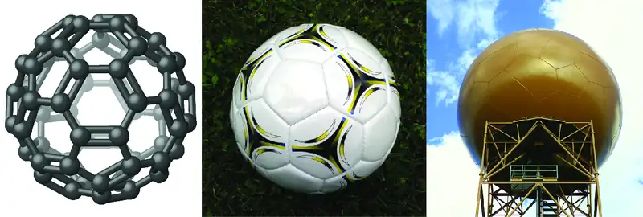
It has long been known that pure carbon occurs in different forms (allotropes) including graphite and diamonds. But it was not until 1985 that a new form of carbon was recognized: buckminsterfullerene. This molecule was named after the architect and inventor R. Buckminster Fuller (1895–1983), whose signature architectural design was the geodesic dome, characterized by a lattice shell structure supporting a spherical surface. Experimental evidence revealed the formula, C60, and then scientists determined how 60 carbon atoms could form one symmetric, stable molecule. They were guided by bonding theory—the topic of this chapter—which explains how individual atoms connect to form more complex structures.
7.1 Ionic Bonding¶
Learning Objectives
By the end of this section, you will be able to:
- Explain the formation of cations, anions, and ionic compounds
- Predict the charge of common metallic and nonmetallic elements, and write their electron configurations
As you have learned, ions are atoms or molecules bearing an electrical charge. A cation (a positive ion) forms when a neutral atom loses one or more electrons from its valence shell, and an anion (a negative ion) forms when a neutral atom gains one or more electrons in its valence shell.
Compounds composed of ions are called ionic compounds (or salts), and their constituent ions are held together by ionic bonds: electrostatic forces of attraction between oppositely charged cations and anions. The properties of ionic compounds shed some light on the nature of ionic bonds. Ionic solids exhibit a crystalline structure and tend to be rigid and brittle; they also tend to have high melting and boiling points, which suggests that ionic bonds are very strong. Ionic solids are also poor conductors of electricity for the same reason—the strength of ionic bonds prevents ions from moving freely in the solid state. Most ionic solids, however, dissolve readily in water. Once dissolved or melted, ionic compounds are excellent conductors of electricity and heat because the ions can move about freely.
Neutral atoms and their associated ions have very different physical and chemical properties. Sodium atoms form sodium metal, a soft, silvery-white metal that burns vigorously in air and reacts explosively with water. Chlorine atoms form chlorine gas, Cl2, a yellow-green gas that is extremely corrosive to most metals and very poisonous to animals and plants. The vigorous reaction between the elements sodium and chlorine forms the white, crystalline compound sodium chloride, common table salt, which contains sodium cations and chloride anions (Figure 7.2). The compound composed of these ions exhibits properties entirely different from the properties of the elements sodium and chlorine. Chlorine is poisonous, but sodium chloride is essential to life; sodium atoms react vigorously with water, but sodium chloride simply dissolves in water.
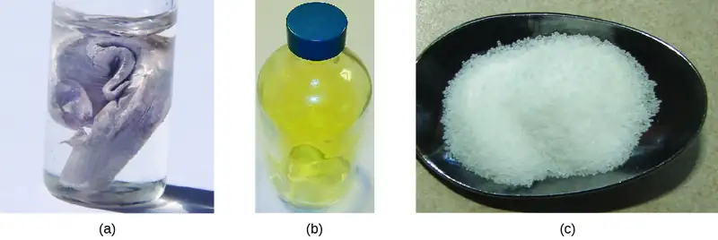
The Formation of Ionic Compounds¶
Binary ionic compounds are composed of just two elements: a metal (which forms the cations) and a nonmetal (which forms the anions). For example, NaCl is a binary ionic compound. We can think about the formation of such compounds in terms of the periodic properties of the elements. Many metallic elements have relatively low ionization potentials and lose electrons easily. These elements lie to the left in a period or near the bottom of a group on the periodic table. Nonmetal atoms have relatively high electron affinities and thus readily gain electrons lost by metal atoms, thereby filling their valence shells. Nonmetallic elements are found in the upper-right corner of the periodic table.
As all substances must be electrically neutral, the total number of positive charges on the cations of an ionic compound must equal the total number of negative charges on its anions. The formula of an ionic compound represents the simplest ratio of the numbers of ions necessary to give identical numbers of positive and negative charges. For example, the formula for aluminum oxide, Al2O3, indicates that this ionic compound contains two aluminum cations, Al3+, for every three oxide anions, O2− [thus, (2 \(\times\) +3) + (3 \(\times\) –2) = 0].
It is important to note, however, that the formula for an ionic compound does not represent the physical arrangement of its ions. It is incorrect to refer to a sodium chloride (NaCl) “molecule” because there is not a single ionic bond, per se, between any specific pair of sodium and chloride ions. The attractive forces between ions are isotropic—the same in all directions—meaning that any particular ion is equally attracted to all of the nearby ions of opposite charge. This results in the ions arranging themselves into a tightly bound, three-dimensional lattice structure. Sodium chloride, for example, consists of a regular arrangement of equal numbers of Na+ cations and Cl– anions (Figure 7.3).
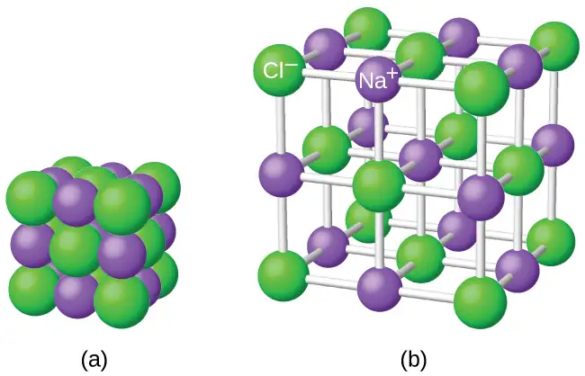
The strong electrostatic attraction between Na+ and Cl– ions holds them tightly together in solid NaCl. It requires 769 kJ of energy to dissociate one mole of solid NaCl into separate gaseous Na+ and Cl– ions:
Electronic Structures of Cations¶
When forming a cation, an atom of a main group element tends to lose all of its valence electrons, thus assuming the electronic structure of the noble gas that precedes it in the periodic table. For groups 1 (the alkali metals) and 2 (the alkaline earth metals), the group numbers are equal to the numbers of valence shell electrons and, consequently, to the charges of the cations formed from atoms of these elements when all valence shell electrons are removed. For example, calcium is a group 2 element whose neutral atoms have 20 electrons and a ground state electron configuration of 1s22s22p63s23p64s2. When a Ca atom loses both of its valence electrons, the result is a cation with 18 electrons, a 2+ charge, and an electron configuration of 1s22s22p63s23p6. The Ca2+ ion is therefore isoelectronic with the noble gas Ar.
For groups 13–17, the group numbers exceed the number of valence electrons by 10 (accounting for the possibility of full d subshells in atoms of elements in the fourth and greater periods). Thus, the charge of a cation formed by the loss of all valence electrons is equal to the group number minus 10. For example, aluminum (in group 13) forms 3+ ions (Al3+).
Exceptions to the expected behavior involve elements toward the bottom of the groups. In addition to the expected ions Tl3+, Sn4+, Pb4+, and Bi5+, a partial loss of these atoms’ valence shell electrons can also lead to the formation of Tl+, Sn2+, Pb2+, and Bi3+ ions. The formation of these 1+, 2+, and 3+ cations is ascribed to the inert pair effect, which reflects the relatively low energy of the valence s-electron pair for atoms of the heavy elements of groups 13, 14, and 15. Mercury (group 12) also exhibits an unexpected behavior: it forms a diatomic ion, \(\text{Hg}_{2}{}^{\text{2+}}\) (an ion formed from two mercury atoms, with an Hg-Hg bond), in addition to the expected monatomic ion Hg2+ (formed from only one mercury atom).
Transition and inner transition metal elements behave differently than main group elements. Most transition metal cations have 2+ or 3+ charges that result from the loss of their outermost s electron(s) first, sometimes followed by the loss of one or two d electrons from the next-to-outermost shell. For example, iron (1s22s22p63s23p63d64s2) forms the ion Fe2+ (1s22s22p63s23p63d6) by the loss of the 4s electrons and the ion Fe3+ (1s22s22p63s23p63d5) by the loss of the 4s electrons and one of the 3d electrons. Although the d orbitals of the transition elements are—according to the Aufbau principle—the last to fill when building up electron configurations, the outermost s electrons are the first to be lost when these atoms ionize. When the inner transition metals form ions, they usually have a 3+ charge, resulting from the loss of their outermost s electrons and a d or f electron.
Example 7.1 Determining the Electronic Structures of Cations
There are at least 14 elements categorized as “essential trace elements” for the human body. They are called “essential” because they are required for healthy bodily functions, “trace” because they are required only in small amounts, and “elements” in spite of the fact that they are really ions. Two of these essential trace elements, chromium and zinc, are required as Cr3+ and Zn2+. Write the electron configurations of these cations.
Solution
First, write the electron configuration for the neutral atoms:
Zn: [Ar]3d104s2
Cr: [Ar]3d54s1
Next, remove electrons from the highest energy orbital. For the transition metals, electrons are removed from the s orbital first and then from the d orbital. For the p-block elements, electrons are removed from the p orbitals and then from the s orbital. Zinc is a member of group 12, so it should have a charge of 2+, and thus loses only the two electrons in its s orbital. Chromium is a transition element and should lose its s electrons and then its d electrons when forming a cation. Thus, we find the following electron configurations of the ions:
Zn2+: [Ar]3d10
Cr3+: [Ar]3d3
Check Your Learning
Potassium and magnesium are required in our diet. Write the electron configurations of the ions expected from these elements.
Answer:
K+: [Ar], Mg2+: [Ne]
Electronic Structures of Anions¶
Most monatomic anions form when a neutral nonmetal atom gains enough electrons to completely fill its outer s and p orbitals, thereby reaching the electron configuration of the next noble gas. Thus, it is simple to determine the charge on such a negative ion: The charge is equal to the number of electrons that must be gained to fill the s and p orbitals of the parent atom. Oxygen, for example, has the electron configuration 1s22s22p4, whereas the oxygen anion has the electron configuration of the noble gas neon (Ne), 1s22s22p6. The two additional electrons required to fill the valence orbitals give the oxide ion the charge of 2– (O2–).
Example 7.2 Determining the Electronic Structure of Anions
Selenium and iodine are two essential trace elements that form anions. Write the electron configurations of the anions.
Solution
Se2–: [Ar]3d104s24p6
I–: [Kr]4d105s25p6
Check Your Learning
Write the electron configurations of a phosphorus atom and its negative ion. Give the charge on the anion.
Answer:
P: [Ne]3s23p3; P3–: [Ne]3s23p6
7.2 Covalent Bonding¶
Learning Objectives
By the end of this section, you will be able to:
- Describe the formation of covalent bonds
- Define electronegativity and assess the polarity of covalent bonds
Ionic bonding results from the electrostatic attraction of oppositely charged ions that are typically produced by the transfer of electrons between metallic and nonmetallic atoms. A different type of bonding results from the mutual attraction of atoms for a “shared” pair of electrons. Such bonds are called covalent bonds. Covalent bonds are formed between two atoms when both have similar tendencies to attract electrons to themselves (i.e., when both atoms have identical or fairly similar ionization energies and electron affinities). For example, two hydrogen atoms bond covalently to form an H2 molecule; each hydrogen atom in the H2 molecule has two electrons stabilizing it, giving each atom the same number of valence electrons as the noble gas He.
Compounds that contain covalent bonds exhibit different physical properties than ionic compounds. Because the attraction between molecules, which are electrically neutral, is weaker than that between electrically charged ions, covalent compounds generally have much lower melting and boiling points than ionic compounds. In fact, many covalent compounds are liquids or gases at room temperature, and, in their solid states, they are typically much softer than ionic solids. Furthermore, whereas ionic compounds are good conductors of electricity when dissolved in water, most covalent compounds are insoluble in water; since they are electrically neutral, they are poor conductors of electricity in any state.
Formation of Covalent Bonds¶
Nonmetal atoms frequently form covalent bonds with other nonmetal atoms. For example, the hydrogen molecule, H2, contains a covalent bond between its two hydrogen atoms. Figure 7.4 illustrates why this bond is formed. Starting on the far right, we have two separate hydrogen atoms with a particular potential energy, indicated by the red line. Along the x-axis is the distance between the two atoms. As the two atoms approach each other (moving left along the x-axis), their valence orbitals (1s) begin to overlap. The single electrons on each hydrogen atom then interact with both atomic nuclei, occupying the space around both atoms. The strong attraction of each shared electron to both nuclei stabilizes the system, and the potential energy decreases as the bond distance decreases. If the atoms continue to approach each other, the positive charges in the two nuclei begin to repel each other, and the potential energy increases. The bond length is determined by the distance at which the lowest potential energy is achieved.
![A graph is shown with the x-axis labeled, “Internuclear distance ( p m )” while the y-axis is labeled, “Energy ( J ).” One value, “0,” is labeled midway up the y-axis and two values: “0” at the far left and “0.74” to the left, are labeled on the x-axis. The point “74” is labeled, “H bond H distance.” A line is graphed that begins near the top of the y-axis and to the far left on the x-axis and drops steeply to a point labeled, “negative 7.24 times 10 superscript negative 19 J” on the y-axis and 74 on the x-axis. This low point on the graph corresponds to a drawing of two spheres that overlap considerably. The line then rises to zero on the y-axis and levels out. The point where it almost reaches zero corresponds to two spheres that overlap slightly. The line at zero on the y-axis corresponds to two spheres that are far from one another.](img/cnx-chem-07-02-morse.webp)
It is essential to remember that energy must be added to break chemical bonds (an endothermic process), whereas forming chemical bonds releases energy (an exothermic process). In the case of H2, the covalent bond is very strong; a large amount of energy, 436 kJ, must be added to break the bonds in one mole of hydrogen molecules and cause the atoms to separate:
Conversely, the same amount of energy is released when one mole of H2 molecules forms from two moles of H atoms:
Pure vs. Polar Covalent Bonds¶
If the atoms that form a covalent bond are identical, as in H2, Cl2, and other diatomic molecules, then the electrons in the bond must be shared equally. We refer to this as a pure covalent bond. Electrons shared in pure covalent bonds have an equal probability of being near each nucleus.
In the case of Cl2, each atom starts off with seven valence electrons, and each Cl shares one electron with the other, forming one covalent bond:
The total number of electrons around each individual atom consists of six nonbonding electrons and two shared (i.e., bonding) electrons for eight total electrons, matching the number of valence electrons in the noble gas argon. Since the bonding atoms are identical, Cl2 also features a pure covalent bond.
When the atoms linked by a covalent bond are different, the bonding electrons are shared, but no longer equally. Instead, the bonding electrons are more attracted to one atom than the other, giving rise to a shift of electron density toward that atom. This unequal distribution of electrons is known as a polar covalent bond, characterized by a partial positive charge on one atom and a partial negative charge on the other. The atom that attracts the electrons more strongly acquires the partial negative charge and vice versa. For example, the electrons in the H–Cl bond of a hydrogen chloride molecule spend more time near the chlorine atom than near the hydrogen atom. Thus, in an HCl molecule, the chlorine atom carries a partial negative charge and the hydrogen atom has a partial positive charge. Figure 7.5 shows the distribution of electrons in the H–Cl bond. Note that the shaded area around Cl is much larger than it is around H. Compare this to Figure 7.4, which shows the even distribution of electrons in the H2 nonpolar bond.
We sometimes designate the positive and negative atoms in a polar covalent bond using a lowercase Greek letter “delta,” δ, with a plus sign or minus sign to indicate whether the atom has a partial positive charge (δ+) or a partial negative charge (δ–). This symbolism is shown for the H–Cl molecule in Figure 7.5.
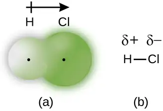
Electronegativity¶
Whether a bond is nonpolar or polar covalent is determined by a property of the bonding atoms called electronegativity. Electronegativity is a measure of the tendency of an atom to attract electrons (or electron density) towards itself. It determines how the shared electrons are distributed between the two atoms in a bond. The more strongly an atom attracts the electrons in its bonds, the larger its electronegativity. Electrons in a polar covalent bond are shifted toward the more electronegative atom; thus, the more electronegative atom is the one with the partial negative charge. The greater the difference in electronegativity, the more polarized the electron distribution and the larger the partial charges of the atoms.
Figure 7.6 shows the electronegativity values of the elements as proposed by one of the most famous chemists of the twentieth century: Linus Pauling (Figure 7.7). In general, electronegativity increases from left to right across a period in the periodic table and decreases down a group. Thus, the nonmetals, which lie in the upper right, tend to have the highest electronegativities, with fluorine the most electronegative element of all (EN = 4.0). Metals tend to be less electronegative elements, and the group 1 metals have the lowest electronegativities. Note that noble gases are excluded from this figure because these atoms usually do not share electrons with others atoms since they have a full valence shell. (While noble gas compounds such as XeO2 do exist, they can only be formed under extreme conditions, and thus they do not fit neatly into the general model of electronegativity.)
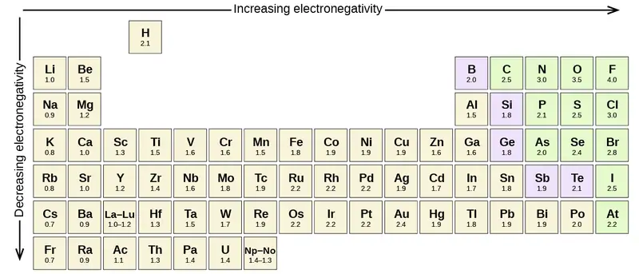
Electronegativity versus Electron Affinity¶
We must be careful not to confuse electronegativity and electron affinity. The electron affinity of an element is a measurable physical quantity, namely, the energy released or absorbed when an isolated gas-phase atom acquires an electron, measured in kJ/mol. Electronegativity, on the other hand, describes how tightly an atom attracts electrons in a bond. It is a dimensionless quantity that is calculated, not measured. Pauling derived the first electronegativity values by comparing the amounts of energy required to break different types of bonds. He chose an arbitrary relative scale ranging from 0 to 4.
Portrait of a Chemist: Linus Pauling
Linus Pauling, shown in Figure 7.7, is the only person to have received two unshared (individual) Nobel Prizes: one for chemistry in 1954 for his work on the nature of chemical bonds and one for peace in 1962 for his opposition to weapons of mass destruction. He developed many of the theories and concepts that are foundational to our current understanding of chemistry, including electronegativity and resonance structures.
Pauling also contributed to many other fields besides chemistry. His research on sickle cell anemia revealed the cause of the disease—the presence of a genetically inherited abnormal protein in the blood—and paved the way for the field of molecular genetics. His work was also pivotal in curbing the testing of nuclear weapons; he proved that radioactive fallout from nuclear testing posed a public health risk.
Electronegativity and Bond Type¶
The absolute value of the difference in electronegativity (ΔEN) of two bonded atoms provides a rough measure of the polarity to be expected in the bond and, thus, the bond type. When the difference is very small or zero, the bond is covalent and nonpolar. When it is large, the bond is polar covalent or ionic. The absolute values of the electronegativity differences between the atoms in the bonds H–H, H–Cl, and Na–Cl are 0 (nonpolar), 0.9 (polar covalent), and 2.1 (ionic), respectively. The degree to which electrons are shared between atoms varies from completely equal (pure covalent bonding) to not at all (ionic bonding). Figure 7.8 shows the relationship between electronegativity difference and bond type.
![Two flow charts and table are shown. The first flow chart is labeled, “Electronegativity difference between bonding atoms.” Below this label are three rounded text bubbles, connected by a downward-facing arrow, labeled, “Zero,” “Intermediate,” and “Large,” respectively. The second flow chart is labeled, “Bond type.” Below this label are three rounded text bubbles, connected by a downward-facing arrow, labeled, “Pure covalent,” “Polar covalent,” and “Ionic,” respectively. A double ended arrow is written vertically to the right of the flow charts and labeled, “Covalent character decreases; ionic character increases.” The table is made up of two columns and four rows. The header line is labeled “Bond type” and “Electronegativity difference.” The left column contains the phrases “Pure covalent,” “Polar covalent,” and “Ionic,” while the right column contains the values “less than 0.4,” “between 0.4 and 1.8,” and “greater than 1.8.”](img/cnx-chem-07-02-deltaen.webp)
A rough approximation of the electronegativity differences associated with covalent, polar covalent, and ionic bonds is shown in Figure 7.8. This table is just a general guide, however, with many exceptions. For example, the H and F atoms in HF have an electronegativity difference of 1.9, and the N and H atoms in NH3 a difference of 0.9, yet both of these compounds form bonds that are considered polar covalent. Likewise, the Na and Cl atoms in NaCl have an electronegativity difference of 2.1, and the Mn and I atoms in MnI2 have a difference of 1.0, yet both of these substances form ionic compounds.
The best guide to the covalent or ionic character of a bond is to consider the types of atoms involved and their relative positions in the periodic table. Bonds between two nonmetals are generally covalent; bonding between a metal and a nonmetal is often ionic.
Some compounds contain both covalent and ionic bonds. The atoms in polyatomic ions, such as OH–, \(\text{NO}_{3}{}^{-},\) and \(\text{NH}_{4}{}^{\text{+}},\) are held together by polar covalent bonds. However, these polyatomic ions form ionic compounds by combining with ions of opposite charge. For example, potassium nitrate, KNO3, contains the K+ cation and the polyatomic \(\text{NO}_{3}{}^{-}\) anion. Thus, bonding in potassium nitrate is ionic, resulting from the electrostatic attraction between the ions K+ and \(\text{NO}_{3}{}^{-},\) as well as covalent between the nitrogen and oxygen atoms in \(\text{NO}_{3}{}^{-}.\)
Example 7.3 Electronegativity and Bond Polarity
Bond polarities play an important role in determining the structure of proteins. Using the electronegativity values in Figure 7.6, arrange the following covalent bonds—all commonly found in amino acids—in order of increasing polarity. Then designate the positive and negative atoms using the symbols δ+ and δ–:
C–H, C–N, C–O, N–H, O–H, S–H
Solution
The polarity of these bonds increases as the absolute value of the electronegativity difference increases. The atom with the δ– designation is the more electronegative of the two. Table 7.1 shows these bonds in order of increasing polarity.
Table 7.1
| Bond Polarity and Electronegativity Difference | ||
|---|---|---|
| Bond | ΔEN | Polarity |
| C–H | 0.4 | \(\overset{\delta-}{\text{C}}-\overset{\delta\text{+}}{\text{H}}\) |
| S–H | 0.4 | \(\overset{\delta-}{\text{S}}-\overset{\delta\text{+}}{\text{H}}\) |
| C–N | 0.5 | \(\overset{\delta\text{+}}{\text{C}}-\overset{\delta-}{\text{N}}\) |
| N–H | 0.9 | \(\overset{\delta-}{\text{N}}-\overset{\delta\text{+}}{\text{H}}\) |
| C–O | 1.0 | \(\overset{\delta\text{+}}{\text{C}}-\overset{\delta-}{\text{O}}\) |
| O–H | 1.4 | \(\overset{\delta-}{\text{O}}-\overset{\delta\text{+}}{\text{H}}\) |
Check Your Learning
Silicones are polymeric compounds containing, among others, the following types of covalent bonds: Si–O, Si–C, C–H, and C–C. Using the electronegativity values in Figure 7.6, arrange the bonds in order of increasing polarity and designate the positive and negative atoms using the symbols δ+ and δ–.
Answer:
| Bond | Electronegativity Difference | Polarity |
|---|---|---|
| C–C | 0.0 | nonpolar |
| C–H | 0.4 | \(\overset{\delta-}{\text{C}}-\overset{\delta\text{+}}{\text{H}}\) |
| Si–C | 0.7 | \(\overset{\delta\text{+}}{\text{Si}}-\overset{\delta-}{\text{C}}\) |
| Si–O | 1.7 | \(\overset{\delta\text{+}}{\text{Si}}-\overset{\delta-}{\text{O}}\) |
7.3 Lewis Symbols and Structures¶
Learning Objectives
By the end of this section, you will be able to:
- Write Lewis symbols for neutral atoms and ions
- Draw Lewis structures depicting the bonding in simple molecules
Thus far in this chapter, we have discussed the various types of bonds that form between atoms and/or ions. In all cases, these bonds involve the sharing or transfer of valence shell electrons between atoms. In this section, we will explore the typical method for depicting valence shell electrons and chemical bonds, namely Lewis symbols and Lewis structures.
Lewis Symbols¶
We use Lewis symbols to describe valence electron configurations of atoms and monatomic ions. A Lewis symbol consists of an elemental symbol surrounded by one dot for each of its valence electrons:
Figure 7.9 shows the Lewis symbols for the elements of the third period of the periodic table.
![A table is shown that has three columns and nine rows. The header row reads “Atoms,” “Electronic Configuration,” and “Lewis Symbol.” The first column contains the words “sodium,” “magnesium,” “aluminum,” “silicon,” “phosphorus,” “sulfur,” “chlorine,” and “argon.” The second column contains the symbols and numbers “( N e ) 3 s superscript 2,” “( N e ) 3 s superscript 2, 3 p superscript 1,” “( N e ) 3 s superscript 2, 3 p superscript 2,” “( N e ) 3 s superscript 2, 3 p superscript 3,” “( N e ) 3 s superscript 2, 3 p superscript 4,” “( N e ) 3 s superscript 2, 3 p superscript 5,” and “( N e ) 3 s superscript 2, 3 p superscript 6.” The third column contains Lewis structures for N a with one dot, M g with two dots, A l with three dots, Si with four dots, P with five dots, S with six dots, C l with seven dots, and A r with eight dots.](img/cnx-chem-07-03-3rowlewis.webp)
Lewis symbols can also be used to illustrate the formation of cations from atoms, as shown here for sodium and calcium:
![Two diagrams are shown. The left diagram shows a Lewis dot structure of sodium with one dot, then a right-facing arrow leading to a sodium symbol with a superscripted plus sign, a plus sign, and the letter “e” with a superscripted negative sign. The terms below this diagram read “Sodium atom” and “Sodium cation.” The right diagram shows a Lewis dot structure of calcium with two dots, then a right-facing arrow leading to a calcium symbol with a superscripted two and a plus sign, a plus sign, and the value “2e” with a superscripted negative sign. The terms below this diagram read “Calcium atom” and “Calcium cation.”](img/cnx-chem-07-03-naca-img.webp)
Likewise, they can be used to show the formation of anions from atoms, as shown here for chlorine and sulfur:
![Two diagrams are shown. The left diagram shows a Lewis dot structure of chlorine with seven dots and the letter “e” with a superscripted negative sign, then a right-facing arrow leading to a chlorine symbol with eight dots and a superscripted negative sign. The terms below this diagram read, “Chlorine atom,” and, “Chlorine anion.” The right diagram shows a Lewis dot structure of sulfur with six dots and the symbol “2e” with a superscripted negative sign, then a right-facing arrow leading to a sulfur symbol with eight dots and a superscripted two and negative sign. The terms below this diagram read, “Sulfur atom,” and, “Sulfur anion.”](img/cnx-chem-07-03-cls-img.webp)
Figure 7.10 demonstrates the use of Lewis symbols to show the transfer of electrons during the formation of ionic compounds.
![A table is shown with four rows. The header row reads “Metal,” “Nonmetal,” and “Ionic Compound.” The second row shows the Lewis structures of a reaction. A sodium symbol with one dot, a plus sign, and a chlorine symbol with seven dots lie to the left of a right-facing arrow. To the right of the arrow a sodium symbol with a superscripted plus sign is drawn next to a chlorine symbol with eight dots surrounded by brackets with a superscripted negative sign. One of the dots on the C l atom is red. The terms “sodium atom,” “chlorine atom,” and “sodium chloride ( sodium ion and chloride ion )” are written under the reaction. The third row shows the Lewis structures of a reaction. A magnesium symbol with two red dots, a plus sign, and an oxygen symbol with six dots lie to the left of a right-facing arrow. To the right of the arrow a magnesium symbol with a superscripted two and a plus sign is drawn next to an oxygen symbol with eight dots, two of which are red, surrounded by brackets with a superscripted two a and a negative sign. The terms “magnesium atom,” “oxygen atom,” and “magnesium oxide ( magnesium ion and oxide ion )” are written under the reaction. The fourth row shows the Lewis structures of a reaction. A calcium symbol with two red dots, a plus sign, and a fluorine symbol with a coefficient of two and seven dots lie to the left of a right-facing arrow. To the right of the arrow a calcium symbol with a superscripted two and a plus sign is drawn next to a fluorine symbol with eight dots, one of which is red, surrounded by brackets with a superscripted negative sign and a subscripted two. The terms “calcium atom,” “fluorine atoms,” and “calcium fluoride ( calcium ion and two fluoride ions )” are written under the reaction.](img/cnx-chem-07-03-ionlewis.webp)
Lewis Structures¶
We also use Lewis symbols to indicate the formation of covalent bonds, which are shown in Lewis structures, drawings that describe the bonding in molecules and polyatomic ions. For example, when two chlorine atoms form a chlorine molecule, they share one pair of electrons:

The Lewis structure indicates that each Cl atom has three pairs of electrons that are not used in bonding (called lone pairs) and one shared pair of electrons (written between the atoms). A dash (or line) is sometimes used to indicate a shared pair of electrons:
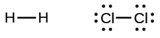
A single shared pair of electrons is called a single bond. Each Cl atom interacts with eight valence electrons: the six in the lone pairs and the two in the single bond.
The Octet Rule¶
The other halogen molecules (F2, Br2, I2, and At2) form bonds like those in the chlorine molecule: one single bond between atoms and three lone pairs of electrons per atom. This allows each halogen atom to have a noble gas electron configuration. The tendency of main group atoms to form enough bonds to obtain eight valence electrons is known as the octet rule.
The number of bonds that an atom can form can often be predicted from the number of electrons needed to reach an octet (eight valence electrons); this is especially true of the nonmetals of the second period of the periodic table (C, N, O, and F). For example, each atom of a group 14 element has four electrons in its outermost shell and therefore requires four more electrons to reach an octet. These four electrons can be gained by forming four covalent bonds, as illustrated here for carbon in CCl4 (carbon tetrachloride) and silicon in SiH4 (silane). Because hydrogen only needs two electrons to fill its valence shell, it is an exception to the octet rule. The transition elements and inner transition elements also do not follow the octet rule:
![Two sets of Lewis dot structures are shown. The left structures depict five C l symbols in a cross shape with eight dots around each, the word “or” and the same five C l symbols, connected by four single bonds in a cross shape. The name “Carbon tetrachloride” is written below the structure. The right hand structures show a S i symbol, surrounded by eight dots and four H symbols in a cross shape. The word “or” separates this from an S i symbol with four single bonds connecting the four H symbols in a cross shape. The name “Silane” is written below these diagrams.](img/cnx-chem-07-03-xy4struc-img.webp)
Group 15 elements such as nitrogen have five valence electrons in the atomic Lewis symbol: one lone pair and three unpaired electrons. To obtain an octet, these atoms form three covalent bonds, as in NH3 (ammonia). Oxygen and other atoms in group 16 obtain an octet by forming two covalent bonds:
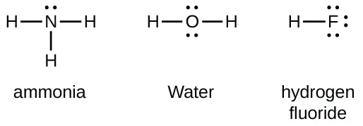
Double and Triple Bonds¶
As previously mentioned, when a pair of atoms shares one pair of electrons, we call this a single bond. However, a pair of atoms may need to share more than one pair of electrons in order to achieve the requisite octet. A double bond forms when two pairs of electrons are shared between a pair of atoms, as between the carbon and oxygen atoms in CH2O (formaldehyde) and between the two carbon atoms in C2H4 (ethylene):
![Two pairs of Lewis structures are shown. The left pair of structures shows a carbon atom forming single bonds to two hydrogen atoms. There are four electrons between the C atom and an O atom. The O atom also has two pairs of dots. The word “or” separates this structure from the same diagram, except this time there is a double bond between the C atom and O atom. The name, “Formaldehyde” is written below these structures. On the right are two more structures. The left shows two C atoms with four dots in between them and each forming single bonds to two H atoms. The word “or” lies to the left of the second structure, which is the same except that the C atoms form double bonds with one another. The name, “Ethylene” is written below these structures.](img/cnx-chem-07-03-doublebond-img.webp)
A triple bond forms when three electron pairs are shared by a pair of atoms, as in carbon monoxide (CO) and the cyanide ion (CN–):
![Two pairs of Lewis structures are shown. The left pair of structures show a C atom and an O atom with six dots in between them and a lone pair on each. The word “or” and the same structure with a triple bond in between the C atom and O atom also are shown. The name “Carbon monoxide” is written below this structure. The right pair of structures show a C atom and an N atom with six dots in between them and a lone pair on each. The word “or” and the same structure with a triple bond in between the C atom and N atom also are shown. The name “Cyanide ion” is written below this structure.](img/cnx-chem-07-03-cocn-img.webp)
Writing Lewis Structures with the Octet Rule¶
For very simple molecules and molecular ions, we can write the Lewis structures by merely pairing up the unpaired electrons on the constituent atoms. See these examples:
![Three reactions are shown with Lewis dot diagrams. The first shows a hydrogen with one red dot, a plus sign and a bromine with seven dots, one of which is red, connected by a right-facing arrow to a hydrogen and bromine with a pair of red dots in between them. There are also three lone pairs on the bromine. The second reaction shows a hydrogen with a coefficient of two and one red dot, a plus sign, and a sulfur atom with six dots, two of which are red, connected by a right facing arrow to two hydrogen atoms and one sulfur atom. There are two red dots in between the two hydrogen atoms and the sulfur atom. Both pairs of these dots are red. The sulfur atom also has two lone pairs of dots. The third reaction shows two nitrogen atoms each with five dots, three of which are red, separated by a plus sign, and connected by a right-facing arrow to two nitrogen atoms with six red electron dots in between one another. Each nitrogen atom also has one lone pair of electrons.](img/cnx-chem-07-03-unprelec-img.webp)
For more complicated molecules and molecular ions, it is helpful to follow the step-by-step procedure outlined here:
- Determine the total number of valence (outer shell) electrons. For cations, subtract one electron for each positive charge. For anions, add one electron for each negative charge.
- Draw a skeleton structure of the molecule or ion, arranging the atoms around a central atom. (Generally, the least electronegative element should be placed in the center.) Connect each atom to the central atom with a single bond (one electron pair).
- Distribute the remaining electrons as lone pairs on the terminal atoms (except hydrogen), completing an octet around each atom.
- Place all remaining electrons on the central atom.
- Rearrange the electrons of the outer atoms to make multiple bonds with the central atom in order to obtain octets wherever possible.
Let us determine the Lewis structures of SiH4, \(\text{CHO}_{2}{}^{-},\) NO+, and OF2 as examples in following this procedure:
-
Determine the total number of valence (outer shell) electrons in the molecule or ion.
-
For a molecule, we add the number of valence electrons on each atom in the molecule:
\[ \begin{array}{l} \quad\text{SiH}_{4} \\ \quad\text{Si: 4 valence electrons/atom}\:\times\:\text{1 atom}=4 \\ \underline{+\:\text{H: 1 valence electron/atom}\:\times\:\text{4 atoms}=4} \\ \\ \hspace{3em}=\text{8 valence electrons} \end{array} \] -
For a negative ion, such as \(\text{CHO}_{2}{}^{-},\) we add the number of valence electrons on the atoms to the number of negative charges on the ion (one electron is gained for each single negative charge):
\[ \begin{array}{l} \;\text{CHO}_{2}{}^{-} \\ \;\text{C: 4 valence electrons/atom}\:\times\:\text{1 atom}=4 \\ \quad\text{H: 1 valence electron/atom}\:\times\:\text{1 atom}=1 \\ \,\text{O: 6 valence electrons/atom}\:\times\:\text{2 atoms}=12 \\ \underline{+\hspace{3em}\text{1 additional electron}=1} \\ \\ \hspace{3em}=\text{18 valence electrons} \end{array} \] -
For a positive ion, such as NO+, we add the number of valence electrons on the atoms in the ion and then subtract the number of positive charges on the ion (one electron is lost for each single positive charge) from the total number of valence electrons:
\[ \begin{array}{l} \,\text{NO}^{+} \\ \text{N: 5 valence electrons/atom}\:\times\:\text{1 atom}=5 \\ \\ \;\text{O: 6 valence electron/atom}\:\times\:\text{1 atom}=6 \\ \;\underline{+\;\text{−1 electron (positive charge)}\hspace{1.8em}=-1} \\ \\ \hspace{3em}=\text{10 valence electrons} \end{array} \] -
Since OF2 is a neutral molecule, we simply add the number of valence electrons:
\[ \begin{array}{l} \quad\text{OF}_{2} \\ \quad\text{O: 6 valence electrons/atom}\:\times\:\text{1 atom}=6 \\ \,\underline{+\:\text{F: 7 valence electrons/atom}\:\times\:\text{2 atoms}=14} \\ \hspace{3em}=\text{20 valence electrons} \end{array} \]
-
-
Draw a skeleton structure of the molecule or ion, arranging the atoms around a central atom and connecting each atom to the central atom with a single (one electron pair) bond. (Note that we denote ions with brackets around the structure, indicating the charge outside the brackets:)
![Four Lewis diagrams are shown. The first shows one silicon single boned to four hydrogen atoms. The second shows a carbon which forms a single bond with an oxygen and a hydrogen and a double bond with a second oxygen. This structure is surrounded by brackets and has a superscripted negative sign near the upper right corner. The third structure shows a nitrogen single bonded to an oxygen and surrounded by brackets with a superscripted plus sign in the upper right corner. The last structure shows two fluorine atoms single bonded to a central oxygen.](img/cnx-chem-07-03-singlebond-img.webp)
When several arrangements of atoms are possible, as for \(\text{CHO}_{2}{}^{-},\) we must use experimental evidence to choose the correct one. In general, the less electronegative elements are more likely to be central atoms. In \(\text{CHO}_{2}{}^{-},\) the less electronegative carbon atom occupies the central position with the oxygen and hydrogen atoms surrounding it. Other examples include P in POCl3, S in SO2, and Cl in \(\text{ClO}_{4}{}^{-}.\) An exception is that hydrogen is almost never a central atom. As the most electronegative element, fluorine also cannot be a central atom. -
Distribute the remaining electrons as lone pairs on the terminal atoms (except hydrogen) to complete their valence shells with an octet of electrons.
- There are no remaining electrons on SiH4, so it is unchanged:
![Four Lewis structures are shown. The first shows one silicon single boned to four hydrogen atoms. The second shows a carbon single bonded to two oxygen atoms that each have three lone pairs and single bonded to a hydrogen. This structure is surrounded by brackets and has a superscripted negative sign near the upper right corner. The third structure shows a nitrogen single bonded to an oxygen, each with three lone pairs of electrons. This structure is surrounded by brackets with a superscripted plus sign in the upper right corner. The last structure shows two fluorine atoms, each with three lone pairs of electrons, single bonded to a central oxygen.](img/cnx-chem-07-03-sih4-img.webp)
- There are no remaining electrons on SiH4, so it is unchanged:
-
Place all remaining electrons on the central atom.
- For SiH4, \(\text{CHO}_{2}{}^{-},\) and NO+, there are no remaining electrons; we already placed all of the electrons determined in Step 1.
- For OF2, we had 16 electrons remaining in Step 3, and we placed 12, leaving 4 to be placed on the central atom:
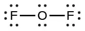
-
Rearrange the electrons of the outer atoms to make multiple bonds with the central atom in order to obtain octets wherever possible.
- SiH4: Si already has an octet, so nothing needs to be done.
- \(\text{CHO}_{2}{}^{-}:\) We have distributed the valence electrons as lone pairs on the oxygen atoms, but the carbon atom lacks an octet:
![Two Lewis diagrams are shown with the word “gives” in between them. The left diagram, surrounded by brackets and with a superscripted negative sign, shows a carbon atom single bonded to two oxygen atoms, each with three lone pairs of electrons. The carbon atom also forms a single bond with a hydrogen atom. A curved arrow points from a lone pair on one of the oxygen atoms to the carbon atom. The right diagram, surrounded by brackets and with a superscripted negative sign, shows a carbon atom single bonded to an oxygen atom with three lone pairs of electrons, double bonded to an oxygen atom with two lone pairs of electrons, and single bonded to a hydrogen atom.](img/cnx-chem-07-03-formate2-img.webp)
- NO+: For this ion, we added eight valence electrons, but neither atom has an octet. We cannot add any more electrons since we have already used the total that we found in Step 1, so we must move electrons to form a multiple bond:
This still does not produce an octet, so we must move another pair, forming a triple bond: - In OF2, each atom has an octet as drawn, so nothing changes.
Example 7.4 Writing Lewis Structures
NASA’s Cassini-Huygens mission detected a large cloud of toxic hydrogen cyanide (HCN) on Titan, one of Saturn’s moons. Titan also contains ethane (H3CCH3), acetylene (HCCH), and ammonia (NH3). What are the Lewis structures of these molecules?
Solution
- Calculate the number of valence electrons.
HCN: (1 \(\times\) 1) + (4 \(\times\) 1) + (5 \(\times\) 1) = 10
H3CCH3: (1 \(\times\) 3) + (2 \(\times\) 4) + (1 \(\times\) 3) = 14
HCCH: (1 \(\times\) 1) + (2 \(\times\) 4) + (1 \(\times\) 1) = 10
NH3: (5 \(\times\) 1) + (3 \(\times\) 1) = 8 - Draw a skeleton and connect the atoms with single bonds. Remember that H is never a central atom:
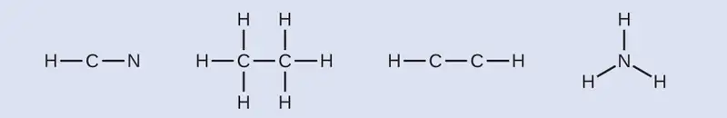
- Where needed, distribute electrons to the terminal atoms:
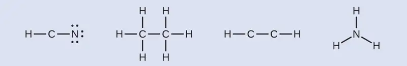
HCN: six electrons placed on N
H3CCH3: no electrons remain
HCCH: no terminal atoms capable of accepting electrons
NH3: no terminal atoms capable of accepting electrons - Where needed, place remaining electrons on the central atom:
![Four Lewis structures are shown. The first structure shows a carbon atom single bonded to a hydrogen atom and a nitrogen atom, which has three lone pairs of electrons. The second structure shows two carbon atoms single bonded to one another. Each is single bonded to three hydrogen atoms. The third structure shows two carbon atoms, each with a lone pair of electrons, single bonded to one another and each single bonded to one hydrogen atom. The fourth structure shows a nitrogen atom with a lone pair of electrons single bonded to three hydrogen atoms.](img/cnx-chem-07-03-ex070301-3-img.webp)
HCN: no electrons remain
H3CCH3: no electrons remain
HCCH: four electrons placed on carbon
NH3: two electrons placed on nitrogen - Where needed, rearrange electrons to form multiple bonds in order to obtain an octet on each atom:
HCN: form two more C–N bonds
H3CCH3: all atoms have the correct number of electrons
HCCH: form a triple bond between the two carbon atoms
NH3: all atoms have the correct number of electrons![Four Lewis structures are shown. The first structure shows a carbon atom single bonded to a hydrogen atom and a nitrogen atom, which has three lone pairs of electrons. Two curved arrows point from the nitrogen to the carbon. Below this structure is the word “gives” and below that is the same structure, but this time there is a triple bond between the carbon and nitrogen. The second structure shows two carbons single bonded to one another and each single bonded to three hydrogen atoms. The third structure shows two carbon atoms, each with a lone pair of electrons, single bonded to one another and each single bonded to one hydrogen atom. Two curved arrows point from the carbon atoms to the space in between the two. Below this structure is the word “gives” and the same structure, but this time with a triple bond between the two carbons. The fourth structure shows a nitrogen atom with a lone pair of electrons single bonded to three hydrogen atoms.](img/cnx-chem-07-03-ex070301-4-img.webp)
Check Your Learning
Both carbon monoxide, CO, and carbon dioxide, CO2, are products of the combustion of fossil fuels. Both of these gases also cause problems: CO is toxic and CO2 has been implicated in global climate change. What are the Lewis structures of these two molecules?
Answer:
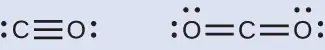
How Sciences Interconnect: Fullerene Chemistry
Carbon, in various forms and compounds, has been known since prehistoric times, . Soot has been used as a pigment (often called carbon black) for thousands of years. Charcoal, high in carbon content, has likewise been critical to human development. Carbon is the key additive to iron in the steelmaking process, and diamonds have a unique place in both culture and industry. With all this usage came significant study, particularly with the emergence of organic chemistry. And even with all the known forms and functions of the element, scientists began to uncover the potential for even more varied and extensive carbon structures.
As early as the 1960s, chemists began to observe complex carbon structures, but they had little evidence to support their concepts, or their work did not make it into the mainstream. Eiji Osawa predicted a spherical form based on observations of a similar structure, but his work was not widely known outside Japan. In a similar manner, the most comprehensive advance was likely computational chemist Elena Galpern's, who in 1973 predicted a highly stable, 60-carbon molecule; her work was also isolated to her native Russia. Still later, Harold Kroto, working with Canadian radio astronomers, sought to uncover the nature of long carbon chains that had been discovered in interstellar space.
Kroto sought to use a machine developed by Richard Smalley's team at Rice University to learn more about these structures. Together with Robert Curl, who had introduced them, and three graduate students—James Heath, Sean O’Brien, and Yuan Liu—they performed an intensive series of experiments that led to a major discovery.
In 1996, the Nobel Prize in Chemistry was awarded to Richard Smalley (Figure 7.11), Robert Curl, and Harold Kroto for their work in discovering a new form of carbon, the C60 buckminsterfullerene molecule (Figure 7.1). An entire class of compounds, including spheres and tubes of various shapes, were discovered based on C60. This type of molecule, called a fullerene, shows promise in a variety of applications. Because of their size and shape, fullerenes can encapsulate other molecules, so they have shown potential in various applications from hydrogen storage to targeted drug delivery systems. They also possess unique electronic and optical properties that have been put to good use in solar powered devices and chemical sensors.
Exceptions to the Octet Rule¶
Many covalent molecules have central atoms that do not have eight electrons in their Lewis structures. These molecules fall into three categories:
- Odd-electron molecules have an odd number of valence electrons, and therefore have an unpaired electron.
- Electron-deficient molecules have a central atom that has fewer electrons than needed for a noble gas configuration.
- Hypervalent molecules have a central atom that has more electrons than needed for a noble gas configuration.
Odd-electron Molecules¶
We call molecules that contain an odd number of electrons free radicals. Nitric oxide, NO, is an example of an odd-electron molecule; it is produced in internal combustion engines when oxygen and nitrogen react at high temperatures.
To draw the Lewis structure for an odd-electron molecule like NO, we follow the same five steps we would for other molecules, but with a few minor changes:
- Determine the total number of valence (outer shell) electrons. The sum of the valence electrons is 5 (from N) + 6 (from O) = 11. The odd number immediately tells us that we have a free radical, so we know that not every atom can have eight electrons in its valence shell.
- Draw a skeleton structure of the molecule. We can easily draw a skeleton with an N–O single bond:
N–O - Distribute the remaining electrons as lone pairs on the terminal atoms. In this case, there is no central atom, so we distribute the electrons around both atoms. We give eight electrons to the more electronegative atom in these situations; thus oxygen has the filled valence shell:
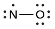
- Place all remaining electrons on the central atom. Since there are no remaining electrons, this step does not apply.
- Rearrange the electrons to make multiple bonds with the central atom in order to obtain octets wherever possible. We know that an odd-electron molecule cannot have an octet for every atom, but we want to get each atom as close to an octet as possible. In this case, nitrogen has only five electrons around it. To move closer to an octet for nitrogen, we take one of the lone pairs from oxygen and use it to form a NO double bond. (We cannot take another lone pair of electrons on oxygen and form a triple bond because nitrogen would then have nine electrons:)
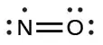
Electron-deficient Molecules¶
We will also encounter a few molecules that contain central atoms that do not have a filled valence shell. Generally, these are molecules with central atoms from groups 2 and 13, outer atoms that are hydrogen, or other atoms that do not form multiple bonds. For example, molecules of beryllium dihydride, BeH2, and boron trifluoride, BF3, contain central atoms with only two and three valence electrons, respectively. With only H as outer atoms, there is just one possibility for the Lewis structure of BeH2, and it does not satisfy the octet rule for the central Be atom (see as follows). It is possible to draw a structure with a double bond between a boron atom and a fluorine atom in BF3, satisfying the octet rule, but experimental evidence indicates the bond lengths are closer to that expected for B–F single bonds. This suggests the best Lewis structure has three B–F single bonds and an electron deficient boron. The reactivity of the compound is also consistent with an electron deficient boron. However, the B–F bonds are slightly shorter than what is actually expected for B–F single bonds, indicating that some double bond character is found in the actual molecule.
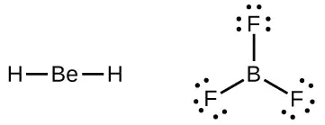
An atom like the boron atom in BF3, which does not have eight electrons, is very reactive. It readily combines with a molecule containing an atom with a lone pair of electrons. For example, NH3 reacts with BF3 because the lone pair on nitrogen can be shared with the boron atom:
![A reaction is shown with three Lewis diagrams. The left diagram shows a boron atom single bonded to three fluorine atoms, each with three lone pairs of electrons. There is a plus sign. The next structure shows a nitrogen atom with one lone pair of electrons single bonded to three hydrogen atoms. A right-facing arrow leads to the final Lewis structure that shows a boron atom single bonded to a nitrogen atom and single bonded to three fluorine atoms, each with three lone pairs of electrons. The nitrogen atom is also single bonded to three hydrogen atoms. The bond between the boron atom and the nitrogen atom is colored red.](img/cnx-chem-07-03-dative-img.webp)
Hypervalent Molecules¶
Elements in the second period of the periodic table (n = 2) can accommodate only eight electrons in their valence shell orbitals because they have only four valence orbitals (one 2s and three 2p orbitals). Elements in the third and higher periods (n ≥ 3) have more than four valence orbitals and can share more than four pairs of electrons with other atoms because they have empty d orbitals in the same shell. Molecules formed from these elements are sometimes called hypervalent molecules. Figure 7.12 shows the Lewis structures for two hypervalent molecules, PCl5 and SF6.
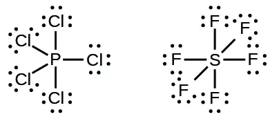
In some hypervalent molecules, such as IF5 and XeF4, some of the electrons in the outer shell of the central atom are lone pairs:
When we write the Lewis structures for these molecules, we find that we have electrons left over after filling the valence shells of the outer atoms with eight electrons. These additional electrons must be assigned to the central atom.
Example 7.5 Writing Lewis Structures: Octet Rule Violations
Xenon is a noble gas, but it forms a number of stable compounds. We examined XeF4 earlier. What are the Lewis structures of XeF2 and XeF6?
Solution
We can draw the Lewis structure of any covalent molecule by following the six steps discussed earlier. In this case, we can condense the last few steps, since not all of them apply.
- Calculate the number of valence electrons:
XeF2: 8 + (2 \(\times\) 7) = 22
XeF6: 8 + (6 \(\times\) 7) = 50 - Draw a skeleton joining the atoms by single bonds. Xenon will be the central atom because fluorine cannot be a central atom:
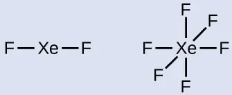
- Distribute the remaining electrons.
XeF2: We place three lone pairs of electrons around each F atom, accounting for 12 electrons and giving each F atom 8 electrons. Thus, six electrons (three lone pairs) remain. These lone pairs must be placed on the Xe atom. This is acceptable because Xe atoms have empty valence shell d orbitals and can accommodate more than eight electrons. The Lewis structure of XeF2 shows two bonding pairs and three lone pairs of electrons around the Xe atom: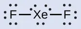
XeF6: We place three lone pairs of electrons around each F atom, accounting for 36 electrons. Two electrons remain, and this lone pair is placed on the Xe atom: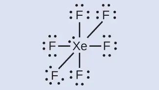
Check Your Learning
The halogens form a class of compounds called the interhalogens, in which halogen atoms covalently bond to each other. Write the Lewis structures for the interhalogens BrCl3 and \(\text{ICl}_{4}{}^{-}.\)
Answer:
7.4 Formal Charges and Resonance¶
Learning Objectives
By the end of this section, you will be able to:
- Compute formal charges for atoms in any Lewis structure
- Use formal charges to identify the most reasonable Lewis structure for a given molecule
- Explain the concept of resonance and draw Lewis structures representing resonance forms for a given molecule
In the previous section, we discussed how to write Lewis structures for molecules and polyatomic ions. As we have seen, however, in some cases, there is seemingly more than one valid structure for a molecule. We can use the concept of formal charges to help us predict the most appropriate Lewis structure when more than one is reasonable.
Calculating Formal Charge¶
The formal charge of an atom in a molecule is the hypothetical charge the atom would have if we could redistribute the electrons in the bonds evenly between the atoms. Another way of saying this is that formal charge results when we take the number of valence electrons of a neutral atom, subtract the nonbonding electrons, and then subtract the number of bonds connected to that atom in the Lewis structure.
Thus, we calculate formal charge as follows:
We can double-check formal charge calculations by determining the sum of the formal charges for the whole structure. The sum of the formal charges of all atoms in a molecule must be zero; the sum of the formal charges in an ion should equal the charge of the ion.
We must remember that the formal charge calculated for an atom is not the actual charge of the atom in the molecule. Formal charge is only a useful bookkeeping procedure; it does not indicate the presence of actual charges.
Example 7.6 Calculating Formal Charge from Lewis Structures
Assign formal charges to each atom in the interhalogen ion \(\text{ICl}_{4}{}^{-}.\)
Solution
- We divide the bonding electron pairs equally for all I–Cl bonds:
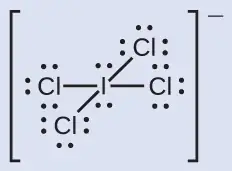
- We assign lone pairs of electrons to their atoms. Each Cl atom now has seven electrons assigned to it, and the I atom has eight.
- Subtract this number from the number of valence electrons for the neutral atom:
I: 7 – 8 = –1
Cl: 7 – 7 = 0
The sum of the formal charges of all the atoms equals –1, which is identical to the charge of the ion (–1).
Check Your Learning
Calculate the formal charge for each atom in the carbon monoxide molecule:
Answer:
C −1, O +1
Example 7.7 Calculating Formal Charge from Lewis Structures
Assign formal charges to each atom in the interhalogen molecule BrCl3.
Solution
- Assign one of the electrons in each Br–Cl bond to the Br atom and one to the Cl atom in that bond:
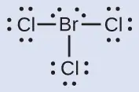
- Assign the lone pairs to their atom. Now each Cl atom has seven electrons and the Br atom has seven electrons.
- Subtract this number from the number of valence electrons for the neutral atom. This gives the formal charge:
Br: 7 – 7 = 0
Cl: 7 – 7 = 0
All atoms in BrCl3 have a formal charge of zero, and the sum of the formal charges totals zero, as it must in a neutral molecule.
Check Your Learning
Determine the formal charge for each atom in NCl3.
Answer:
N: 0; all three Cl atoms: 0
Using Formal Charge to Predict Molecular Structure¶
The arrangement of atoms in a molecule or ion is called its molecular structure. In many cases, following the steps for writing Lewis structures may lead to more than one possible molecular structure—different multiple bond and lone-pair electron placements or different arrangements of atoms, for instance. A few guidelines involving formal charge can be helpful in deciding which of the possible structures is most likely for a particular molecule or ion:
- A molecular structure in which all formal charges are zero is preferable to one in which some formal charges are not zero.
- If the Lewis structure must have nonzero formal charges, the arrangement with the smallest nonzero formal charges is preferable.
- Lewis structures are preferable when adjacent formal charges are zero or of the opposite sign.
- When we must choose among several Lewis structures with similar distributions of formal charges, the structure with the negative formal charges on the more electronegative atoms is preferable.
To see how these guidelines apply, let us consider some possible structures for carbon dioxide, CO2. We know from our previous discussion that the less electronegative atom typically occupies the central position, but formal charges allow us to understand why this occurs. We can draw three possibilities for the structure: carbon in the center and double bonds, carbon in the center with a single and triple bond, and oxygen in the center with double bonds:
![Three Lewis structures are shown. The left and right structures show a carbon atom double bonded to two oxygen atoms, each of which has two lone pairs of electrons. The center structure shows a carbon atom that is triple bonded to an oxygen atom with one lone pair of electrons and single bonded to an oxygen atom with three lone pairs of electrons. The third structure shows an oxygen atom double bonded to another oxygen atom with to lone pairs of electrons. The first oxygen atom is also double bonded to a carbon atom with two lone pairs of electrons.](img/cnx-chem-07-04-co2pos-img.webp)
Comparing the three formal charges, we can definitively identify the structure on the left as preferable because it has only formal charges of zero (Guideline 1).
As another example, the thiocyanate ion, an ion formed from a carbon atom, a nitrogen atom, and a sulfur atom, could have three different molecular structures: NCS–, CNS–, or CSN–. The formal charges present in each of these molecular structures can help us pick the most likely arrangement of atoms. Possible Lewis structures and the formal charges for each of the three possible structures for the thiocyanate ion are shown here:
![Two rows of structures and numbers are shown. The top row is labeled, “Structure” and depicts three Lewis structures and the bottom row is labeled, “Formal charge.” The left structure shows a carbon atom double bonded to a nitrogen atom with two lone electron pairs on one side and double bonded to a sulfur atom with two lone electron pairs on the other. The structure is surrounded by brackets and has a superscripted negative sign. Below this structure are the numbers negative one, zero, and zero. The middle structure shows a carbon atom with two lone pairs of electrons double bonded to a nitrogen atom that is double bonded to a sulfur atom with two lone electron pairs. The structure is surrounded by brackets and has a superscripted negative sign. Below this structure are the numbers negative two, positive one, and zero. The right structure shows a carbon atom with two lone electron pairs double bonded to a sulfur atom that is double bonded to a nitrogen atom with two lone electron pairs. The structure is surrounded by brackets and has a superscripted negative sign. Below this structure are the numbers negative two, positive two, and one.](img/cnx-chem-07-04-thiocyan-img.webp)
Note that the sum of the formal charges in each case is equal to the charge of the ion (–1). However, the first arrangement of atoms is preferred because it has the lowest number of atoms with nonzero formal charges (Guideline 2). Also, it places the least electronegative atom in the center, and the negative charge on the more electronegative element (Guideline 4).
Example 7.8 Using Formal Charge to Determine Molecular Structure
Nitrous oxide, N2O, commonly known as laughing gas, is used as an anesthetic in minor surgeries, such as the routine extraction of wisdom teeth. Which is the more likely structure for nitrous oxide?
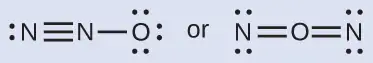
Solution
Determining formal charge yields the following:
![Two Lewis structures are shown with the word “or” in between them. The left structure depicts a nitrogen atom with one lone pair of electrons triple bonded to a nitrogen atom that is single bonded to an oxygen atom with three lone pairs of electrons. The numbers zero, positive one, and negative one are written below this structure. The right structure shows a nitrogen atom with two lone pairs of electrons double bonded to an oxygen atom that is double bonded to a nitrogen atom with two lone pairs of electrons. The numbers negative one, positive two, and negative one are written below this structure.](img/cnx-chem-07-04-n2ofc-img.webp)
The structure with a terminal oxygen atom best satisfies the criteria for the most stable distribution of formal charge:
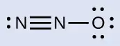
The number of atoms with formal charges are minimized (Guideline 2), there is no formal charge with a magnitude greater than one (Guideline 2), the negative formal charge is on the more electronegative element (Guideline 4), and the less electronegative atom is in the center position.
Check Your Learning
Which is the most likely molecular structure for the nitrite \((\text{NO}_{2}{}^{-})\) ion?
![Two Lewis structures are shown with the word “or” written between them. The left structure shows a nitrogen atom with two lone pairs of electrons double bonded to an oxygen atom with one lone pair of electrons that is single bonded to an oxygen atom with three lone pairs of electrons. Brackets surround this structure and there is a superscripted negative sign. The right structure shows an oxygen atom with two lone pairs of electrons double bonded to a nitrogen atom with one lone pair of electrons that is single bonded to an oxygen with three lone pairs of electrons. Brackets surround this structure and there is a superscripted negative sign.](img/cnx-chem-07-04-no2ion-img.webp)
Answer:
ONO–
Resonance¶
Notice that the more likely structure for the nitrite anion in Example 7.8 may actually be drawn in two different ways, distinguished by the locations of the N-O and N=O bonds:
![Two Lewis structures are shown. The left structure shows an oxygen atom with three lone pairs of electrons single bonded to a nitrogen atom with one lone pair of electrons that is double bonded to an oxygen with two lone pairs of electrons. Brackets surround this structure, and there is a superscripted negative sign. The right structure shows an oxygen atom with two lone pairs of electrons double bonded to a nitrogen atom with one lone pair of electrons that is single bonded to an oxygen atom with three lone pairs of electrons. Brackets surround this structure, and there is a superscripted negative sign.](img/cnx-chem-07-04-no2res-img.webp)
If nitrite ions do indeed contain a single and a double bond, we would expect for the two bond lengths to be different. A double bond between two atoms is shorter (and stronger) than a single bond between the same two atoms. Experiments show, however, that both N–O bonds in \(\text{NO}_{2}{}^{-}\) have the same strength and length, and are identical in all other properties.
It is not possible to write a single Lewis structure for \(\text{NO}_{2}{}^{-}\) in which nitrogen has an octet and both bonds are equivalent. Instead, we use the concept of resonance: if two or more Lewis structures with the same arrangement of atoms can be written for a molecule or ion, the actual distribution of electrons is an average of that shown by the various Lewis structures. The actual distribution of electrons in each of the nitrogen-oxygen bonds in \(\text{NO}_{2}{}^{-}\) is the average of a double bond and a single bond. We call the individual Lewis structures resonance forms. The actual electronic structure of the molecule (the average of the resonance forms) is called a resonance hybrid of the individual resonance forms. A double-headed arrow between Lewis structures indicates that they are resonance forms.
![Two Lewis structures are shown with a double sided arrow between them. The left structure shows an oxygen atom with three lone pairs of electrons single bonded to a nitrogen atom with one lone pair of electrons that is double bonded to an oxygen with two lone pairs of electrons. Brackets surround this structure, and there is a superscripted negative sign. The right structure shows an oxygen atom with two lone pairs of electrons double bonded to a nitrogen atom with one lone pair of electrons that is single bonded to an oxygen atom with three lone pairs of electrons. Brackets surround this structure, and there is a superscripted negative sign.](img/cnx-chem-07-04-no2resarr-img.webp)
We should remember that a molecule described as a resonance hybrid never possesses an electronic structure described by either resonance form. It does not fluctuate between resonance forms; rather, the actual electronic structure is always the average of that shown by all resonance forms. George Wheland, one of the pioneers of resonance theory, used a historical analogy to describe the relationship between resonance forms and resonance hybrids. A medieval traveler, having never before seen a rhinoceros, described it as a hybrid of a dragon and a unicorn because it had many properties in common with both. Just as a rhinoceros is neither a dragon sometimes nor a unicorn at other times, a resonance hybrid is neither of its resonance forms at any given time. Like a rhinoceros, it is a real entity that experimental evidence has shown to exist. It has some characteristics in common with its resonance forms, but the resonance forms themselves are convenient, imaginary images (like the unicorn and the dragon).
The carbonate anion, \(\text{CO}_{3}{}^{\text{2−}},\) provides a second example of resonance:
![Three Lewis structures are shown with double headed arrows in between. Each structure is surrounded by brackets, and each has a superscripted two negative sign. The left structure depicts a carbon atom bonded to three oxygen atoms. It is single bonded to two of these oxygen atoms, each of which has three lone pairs of electrons, and double bonded to the third, which has two lone pairs of electrons. The double bond is located between the lower left oxygen atom and the carbon atom. The central and right structures are the same as the first, but the position of the double bonded oxygen has moved to the lower right oxygen in the central structure and to the top oxygen in the right structure.](img/cnx-chem-07-04-co3res-img.webp)
One oxygen atom must have a double bond to carbon to complete the octet on the central atom. All oxygen atoms, however, are equivalent, and the double bond could form from any one of the three atoms. This gives rise to three resonance forms of the carbonate ion. Because we can write three identical resonance structures, we know that the actual arrangement of electrons in the carbonate ion is the average of the three structures. Again, experiments show that all three C–O bonds are exactly the same.
Link to Learning
Use this online quiz to practice your skills in drawing resonance structures and estimating formal charges.
7.5 Strengths of Ionic and Covalent Bonds¶
Learning Objectives
By the end of this section, you will be able to:
- Describe the energetics of covalent and ionic bond formation and breakage
- Use the Born-Haber cycle to compute lattice energies for ionic compounds
- Use average covalent bond energies to estimate enthalpies of reaction
A bond’s strength describes how strongly each atom is joined to another atom, and therefore how much energy is required to break the bond between the two atoms. In this section, you will learn about the bond strength of covalent bonds, and then compare that to the strength of ionic bonds, which is related to the lattice energy of a compound.
Bond Strength: Covalent Bonds¶
Stable molecules exist because covalent bonds hold the atoms together. We measure the strength of a covalent bond by the energy required to break it, that is, the energy necessary to separate the bonded atoms. Separating any pair of bonded atoms requires energy (see Figure 7.4). The stronger a bond, the greater the energy required to break it.
The energy required to break a specific covalent bond in one mole of gaseous molecules is called the bond energy or the bond dissociation energy. The bond energy for a diatomic molecule, DX–Y, is defined as the standard enthalpy change for the endothermic reaction:
For example, the bond energy of the pure covalent H–H bond, DH–H, is 436 kJ per mole of H–H bonds broken:
Molecules with three or more atoms have two or more bonds. The sum of all bond energies in such a molecule is equal to the standard enthalpy change for the endothermic reaction that breaks all the bonds in the molecule. For example, the sum of the four C–H bond energies in CH4, 1660 kJ, is equal to the standard enthalpy change of the reaction:
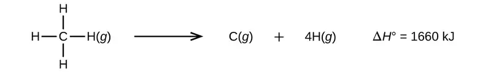
The average C–H bond energy, DC–H, is 1660/4 = 415 kJ/mol because there are four moles of C–H bonds broken per mole of the reaction. Although the four C–H bonds are equivalent in the original molecule, they do not each require the same energy to break; once the first bond is broken (which requires 439 kJ/mol), the remaining bonds are easier to break. The 415 kJ/mol value is the average, not the exact value required to break any one bond.
The strength of a bond between two atoms increases as the number of electron pairs in the bond increases. Generally, as the bond strength increases, the bond length decreases. Thus, we find that triple bonds are stronger and shorter than double bonds between the same two atoms; likewise, double bonds are stronger and shorter than single bonds between the same two atoms. Average bond energies for some common bonds appear in Table 7.2, and a comparison of bond lengths and bond strengths for some common bonds appears in Table 7.3. When one atom bonds to various atoms in a group, the bond strength typically decreases as we move down the group. For example, C–F is 439 kJ/mol, C–Cl is 330 kJ/mol, and C–Br is 275 kJ/mol.
Table 7.2
| Bond Energies (kJ/mol) | |||||
|---|---|---|---|---|---|
| Bond | Bond Energy | Bond | Bond Energy | Bond | Bond Energy |
| H–H | 436 | C–S | 260 | F–Cl | 255 |
| H–C | 415 | C–Cl | 330 | F–Br | 235 |
| H–N | 390 | C–Br | 275 | Si–Si | 230 |
| H–O | 464 | C–I | 240 | Si–P | 215 |
| H–F | 569 | N–N | 160 | Si–S | 225 |
| H–Si | 395 | \(\text{N}=\text{N}\) | 418 | Si–Cl | 359 |
| H–P | 320 | \(\text{N}\equiv\text{N}\) | 946 | Si–Br | 290 |
| H–S | 340 | N–O | 200 | Si–I | 215 |
| H–Cl | 432 | N–F | 270 | P–P | 215 |
| H–Br | 370 | N–P | 210 | P–S | 230 |
| H–I | 295 | N–Cl | 200 | P–Cl | 330 |
| C–C | 345 | N–Br | 245 | P–Br | 270 |
| \(\text{C}=\text{C}\) | 611 | O–O | 140 | P–I | 215 |
| \(\text{C}\equiv\text{C}\) | 837 | \(\text{O}=\text{O}\) | 498 | S–S | 215 |
| C–N | 290 | O–F | 160 | S–Cl | 250 |
| \(\text{C}=\text{N}\) | 615 | O–Si | 370 | S–Br | 215 |
| \(\text{C}\equiv\text{N}\) | 891 | O–P | 350 | Cl–Cl | 243 |
| C–O | 350 | O–Cl | 205 | Cl–Br | 220 |
| \(\text{C}=\text{O}\) | 741 | O–I | 200 | Cl–I | 210 |
| \(\text{C}\equiv\text{O}\) | 1080 | F–F | 160 | Br–Br | 190 |
| C–F | 439 | F–Si | 540 | Br–I | 180 |
| C–Si | 360 | F–P | 489 | I–I | 150 |
| C–P | 265 | F–S | 285 | ||
Table 7.3
| Average Bond Lengths and Bond Energies for Some Common Bonds | ||
|---|---|---|
| Bond | Bond Length (Å) | Bond Energy (kJ/mol) |
| C–C | 1.54 | 345 |
| \(\text{C}=\text{C}\) | 1.34 | 611 |
| \(\text{C}\equiv\text{C}\) | 1.20 | 837 |
| C–N | 1.43 | 290 |
| \(\text{C}=\text{N}\) | 1.38 | 615 |
| \(\text{C}\equiv\text{N}\) | 1.16 | 891 |
| C–O | 1.43 | 350 |
| \(\text{C}=\text{O}\) | 1.23 | 741 |
| \(\text{C}\equiv\text{O}\) | 1.13 | 1080 |
We can use bond energies to calculate approximate enthalpy changes for reactions where enthalpies of formation are not available. Calculations of this type will also tell us whether a reaction is exothermic or endothermic. An exothermic reaction (ΔH negative, heat produced) results when the bonds in the products are stronger than the bonds in the reactants. An endothermic reaction (ΔH positive, heat absorbed) results when the bonds in the products are weaker than those in the reactants.
The enthalpy change, ΔH, for a chemical reaction is approximately equal to the sum of the energy required to break all bonds in the reactants (energy “in”, positive sign) plus the energy released when all bonds are formed in the products (energy “out,” negative sign). This can be expressed mathematically in the following way:
In this expression, the symbol Ʃ means “the sum of” and D represents the bond energy in kilojoules per mole, which is always a positive number. The bond energy is obtained from a table (like Table 7.3) and will depend on whether the particular bond is a single, double, or triple bond. Thus, in calculating enthalpies in this manner, it is important that we consider the bonding in all reactants and products. Because D values are typically averages for one type of bond in many different molecules, this calculation provides a rough estimate, not an exact value, for the enthalpy of reaction.
Consider the following reaction:
or
To form two moles of HCl, one mole of H–H bonds and one mole of Cl–Cl bonds must be broken. The energy required to break these bonds is the sum of the bond energy of the H–H bond (436 kJ/mol) and the Cl–Cl bond (243 kJ/mol). During the reaction, two moles of H–Cl bonds are formed (bond energy = 432 kJ/mol), releasing 2 \(\times\) 432 kJ; or 864 kJ. Because the bonds in the products are stronger than those in the reactants, the reaction releases more energy than it consumes:
This excess energy is released as heat, so the reaction is exothermic. Appendix G gives a value for the standard molar enthalpy of formation of HCl(g), \(\Delta H_{\text{f}}^{{}^{\circ}},\) of –92.307 kJ/mol. Twice that value is –184.6 kJ, which agrees well with the answer obtained earlier for the formation of two moles of HCl.
Example 7.9 Using Bond Energies to Calculate Approximate Enthalpy Changes
Methanol, CH3OH, may be an excellent alternative fuel. The high-temperature reaction of steam and carbon produces a mixture of the gases carbon monoxide, CO, and hydrogen, H2, from which methanol can be produced. Using the bond energies in Table 7.3, calculate the approximate enthalpy change, ΔH, for the reaction here:
Solution
First, we need to write the Lewis structures of the reactants and the products:
![A set of Lewis diagrams show a chemical reaction. The first structure shows a carbon atom with a lone pair of electrons triple bonded to an oxygen with a lone pair of electrons. To the right of this structure is a plus sign, then the number 2 followed by a hydrogen atom single bonded to a hydrogen atom. To the right of this structure is a right-facing arrow followed by a hydrogen atom single bonded to a carbon atom that is single bonded to two hydrogen atoms and an oxygen atom with two lone pairs of electrons. The oxygen atom is also single bonded to a hydrogen atom.](img/cnx-chem-07-05-ch3ohlew-img.webp)
From this, we see that ΔH for this reaction involves the energy required to break a C–O triple bond and two H–H single bonds, as well as the energy produced by the formation of three C–H single bonds, a C–O single bond, and an O–H single bond. We can express this as follows:
Using the bond energy values in Table 7.3, we obtain:
We can compare this value to the value calculated based on \(\Delta H_{\text{f}}^{{}^{\circ}}\) data from Appendix G:
Note that there is a fairly significant gap between the values calculated using the two different methods. This occurs because D values are the average of different bond strengths; therefore, they often give only rough agreement with other data.
Check Your Learning
Ethyl alcohol, CH3CH2OH, was one of the first organic chemicals deliberately synthesized by humans. It has many uses in industry, and it is the alcohol contained in alcoholic beverages. It can be obtained by the fermentation of sugar or synthesized by the hydration of ethylene in the following reaction:
![A set of Lewis structures show a chemical reaction. The first structure shows two carbon atoms that are double bonded together and are each single bonded to two hydrogen atoms. This structure is followed by a plus sign, then an oxygen atom with two lone pairs of electrons single bonded to two hydrogen atoms. A right-facing arrow leads to a carbon atom single bonded to three hydrogen atoms and a second carbon atom. The second carbon atom is single bonded to two hydrogen atoms and an oxygen atom with two lone pairs of electrons. The oxygen atom is single bonded to a hydrogen atom as well.](img/cnx-chem-07-05-ethanol-img.webp)
Using the bond energies in Table 7.3, calculate an approximate enthalpy change, ΔH, for this reaction.
Answer:
–35 kJ
Ionic Bond Strength and Lattice Energy¶
An ionic compound is stable because of the electrostatic attraction between its positive and negative ions. The lattice energy of a compound is a measure of the strength of this attraction. The lattice energy (ΔHlattice) of an ionic compound is defined as the energy required to separate one mole of the solid into its component gaseous ions. For the ionic solid MX, the lattice energy is the enthalpy change of the process:
Note that we are using the convention where the ionic solid is separated into ions, so our lattice energies will be endothermic (positive values). Some texts use the equivalent but opposite convention, defining lattice energy as the energy released when separate ions combine to form a lattice and giving negative (exothermic) values. Thus, if you are looking up lattice energies in another reference, be certain to check which definition is being used. In both cases, a larger magnitude for lattice energy indicates a more stable ionic compound. For sodium chloride, ΔHlattice = 769 kJ. Thus, it requires 769 kJ to separate one mole of solid NaCl into gaseous Na+ and Cl– ions. When one mole each of gaseous Na+ and Cl– ions form solid NaCl, 769 kJ of heat is released.
The lattice energy ΔHlattice of an ionic crystal can be expressed by the following equation (derived from Coulomb’s law, governing the forces between electric charges):
in which C is a constant that depends on the type of crystal structure; Z+ and Z– are the charges on the ions; and Ro is the interionic distance (the sum of the radii of the positive and negative ions). Thus, the lattice energy of an ionic crystal increases rapidly as the charges of the ions increase and the sizes of the ions decrease. When all other parameters are kept constant, doubling the charge of both the cation and anion quadruples the lattice energy. For example, the lattice energy of LiF (Z+ and Z– = 1) is 1023 kJ/mol, whereas that of MgO (Z+ and Z– = 2) is 3900 kJ/mol (Ro is nearly the same—about 200 pm for both compounds).
Different interatomic distances produce different lattice energies. For example, we can compare the lattice energy of MgF2 (2957 kJ/mol) to that of MgI2 (2327 kJ/mol) to observe the effect on lattice energy of the smaller ionic size of F– as compared to I–.
Example 7.10 Lattice Energy Comparisons
The precious gem ruby is aluminum oxide, Al2O3, containing traces of Cr3+. The compound Al2Se3 is used in the fabrication of some semiconductor devices. Which has the larger lattice energy, Al2O3 or Al2Se3?
Solution
In these two ionic compounds, the charges Z+ and Z– are the same, so the difference in lattice energy will depend upon Ro. The O2– ion is smaller than the Se2– ion. Thus, Al2O3 would have a shorter interionic distance than Al2Se3, and Al2O3 would have the larger lattice energy.
Check Your Learning
Zinc oxide, ZnO, is a very effective sunscreen. How would the lattice energy of ZnO compare to that of NaCl?
Answer:
ZnO would have the larger lattice energy because the Z values of both the cation and the anion in ZnO are greater, and the interionic distance of ZnO is smaller than that of NaCl.
The Born-Haber Cycle¶
It is not possible to measure lattice energies directly. However, the lattice energy can be calculated using the equation given in the previous section or by using a thermochemical cycle. The Born-Haber cycle is an application of Hess’s law that breaks down the formation of an ionic solid into a series of individual steps:
- \(\Delta H_{\text{f}}^{{}^{\circ}},\) the standard enthalpy of formation of the compound
- IE, the ionization energy of the metal
- EA, the electron affinity of the nonmetal
- \(\Delta H_{s}^{{}^{\circ}},\) the enthalpy of sublimation of the metal
- D, the bond dissociation energy of the nonmetal
- ΔHlattice, the lattice energy of the compound
Figure 7.13 diagrams the Born-Haber cycle for the formation of solid cesium fluoride.
![A diagram is shown. An upward facing arrow is drawn to the far left of the chart and is labeled “H increasing.” A horizontal line is drawn at the bottom of the chart. A downward-facing, vertical arrow to the left side of this line is labeled, “Overall change.” Beside this arrow is another label, “capital delta H subscript f, equals negative 553.5 k J per mol, ( Enthalpy of formation ).” Three horizontal lines, one above the other, and all above the bottom line, are labeled, from bottom to top, as: “C s ( s ), plus sign, one half F subscript 2, ( g ),” “C s ( g ), plus sign, one half F subscript 2, ( g ),” and “C s, superscript positive sign, ( g ), plus sign, one half F subscript 2, ( g ).” Each of these lines is connected by an upward-facing vertical arrow. Each arrow is labeled, “capital delta H subscript 1, equals 76.5 k J per mol, ( Enthalpy of sublimation ),” “capital delta H subscript 2, equals 375.7 k J per mol, ( ionization energy ),” and “capital delta H subscript 3 equals 79.4 k J / mol ( one half dissociation energy ).” Another horizontal line is drawn in the center top portion of the diagram and is labeled “C s, superscript positive sign, ( g ), plus sign, F, ( g ).” There is one more horizontal line drawn to the right of the overall diagram and located halfway down the image. An arrow connects the top line to this line and is labeled, “capital delta H equals negative 328.2 k J / mol ( electron affinity ).” The line is labeled, “C s superscript positive sign ( g ) plus F superscript negative sign ( g ).” The arrow connecting this line to the bottom line is labeled, “negative capital delta H subscript lattice equals negative 756.9 k J / mol.” The arrow points to a label on the bottom line which reads, “C s F ( s ).”](img/cnx-chem-07-05-bornhaber.webp)
We begin with the elements in their most common states, Cs(s) and F2(g). The \(\Delta H_{s}^{{}^{\circ}}\) represents the conversion of solid cesium into a gas, and then the ionization energy converts the gaseous cesium atoms into cations. In the next step, we account for the energy required to break the F–F bond to produce fluorine atoms. Converting one mole of fluorine atoms into fluoride ions is an exothermic process, so this step gives off energy (the electron affinity) and is shown as decreasing along the y-axis. We now have one mole of Cs cations and one mole of F anions. These ions combine to produce solid cesium fluoride. The enthalpy change in this step is the negative of the lattice energy, so it is also an exothermic quantity. The total energy involved in this conversion is equal to the experimentally determined enthalpy of formation, \(\Delta H_{\text{f}}^{{}^{\circ}},\) of the compound from its elements. In this case, the overall change is exothermic.
Hess’s law can also be used to show the relationship between the enthalpies of the individual steps and the enthalpy of formation. Table 7.4 shows this for fluoride, CsF.
Table 7.4
| Enthalpy of sublimation of Cs(s) | \(\text{Cs}(s)\:\longrightarrow\:\text{Cs}(g)\) | \(\Delta H=\Delta H_{s}^{{}^{\circ}}=76.5\text{kJ/mol}\) |
| One-half of the bond energy of F2 | \(\frac{1}{2}\:\text{F}_{2}(g)\:\longrightarrow\:\text{F}(g)\) | \(\Delta H=\:\frac{1}{2}\:D=79.4\text{kJ/mol}\) |
| Ionization energy of Cs(g) | \(\text{Cs}(g)\:\longrightarrow\:\text{Cs}^{\text{+}}(g)+\text{e}^{-}\) | \(\Delta H=IE=375.7\text{kJ/mol}\) |
| Electron affinity of F | \(\text{F}(g)+\text{e}^{-}\:\longrightarrow\:\text{F}^{-}(g)\) | \(\Delta H=EA=-328.2\text{kJ/mol}\) |
| Negative of the lattice energy of CsF(s) | \(\text{Cs}^{\text{+}}(g)+\text{F}^{-}(g)\:\longrightarrow\:\text{CsF}(s)\) | \(\Delta H=\text{−Δ}H_{\text{lattice}}=?\) |
| Enthalpy of formation of CsF(s), add steps 1–5 | \(\begin{array}{l} \Delta H=\Delta H_{f}^{{}^{\circ}}=\Delta H_{s}^{{}^{\circ}}+\:\frac{1}{2}\:D+IE+(EA)+(-\Delta H_{\text{lattice}}) \\ \text{Cs}(s)+\:\frac{1}{2}\:\text{F}_{2}(g)\:\longrightarrow\:\text{CsF}(s) \end{array}\) | \(\Delta H=-553.5\text{kJ/mol}\) |
Thus, the lattice energy can be calculated from other values. For cesium fluoride, using this data, the lattice energy is:
The Born-Haber cycle may also be used to calculate any one of the other quantities in the equation for lattice energy, provided that the remainder is known. For example, if the relevant enthalpy of sublimation \(\Delta H_{s}^{{}^{\circ}},\) ionization energy (IE), bond dissociation enthalpy (D), lattice energy ΔHlattice, and standard enthalpy of formation \(\Delta H_{\text{f}}^{{}^{\circ}}\) are known, the Born-Haber cycle can be used to determine the electron affinity of an atom.
Lattice energies calculated for ionic compounds are typically much higher than bond dissociation energies measured for covalent bonds. Whereas lattice energies typically fall in the range of 600–4000 kJ/mol (some even higher), covalent bond dissociation energies are typically between 150–400 kJ/mol for single bonds. Keep in mind, however, that these are not directly comparable values. For ionic compounds, lattice energies are associated with many interactions, as cations and anions pack together in an extended lattice. For covalent bonds, the bond dissociation energy is associated with the interaction of just two atoms.
7.6 Molecular Structure and Polarity¶
Learning Objectives
By the end of this section, you will be able to:
- Predict the structures of small molecules using valence shell electron pair repulsion (VSEPR) theory
- Explain the concepts of polar covalent bonds and molecular polarity
- Assess the polarity of a molecule based on its bonding and structure
Thus far, we have used two-dimensional Lewis structures to represent molecules. However, molecular structure is actually three-dimensional, and it is important to be able to describe molecular bonds in terms of their distances, angles, and relative arrangements in space (Figure 7.14). A bond angle is the angle between any two bonds that include a common atom, usually measured in degrees. A bond distance (or bond length) is the distance between the nuclei of two bonded atoms along the straight line joining the nuclei. Bond distances are measured in Ångstroms (1 Å = 10–10 m) or picometers (1 pm = 10–12 m, 100 pm = 1 Å).
![A pair of images are shown. The left image shows a carbon atom with three atoms bonded in a triangular arrangement around it. There are two hydrogen atoms bonded on the left side of the carbon and the angle between them is labeled, “118 degrees” and, “Bond angle.” The carbon is also double bonded to an oxygen atom. The double bond is shaded and there is a bracket which labels the bond, “Bond length ( angstrom ), ( center to center ),” and, “1.21 angstrom.” The right image shows a ball-and-stick model of the same elements. The hydrogen atoms are white, the carbon atom is black, and the oxygen atom is red.](img/cnx-chem-07-06-ch2o.webp)
VSEPR Theory¶
Valence shell electron-pair repulsion theory (VSEPR theory) enables us to predict the molecular structure, including approximate bond angles around a central atom, of a molecule from an examination of the number of bonds and lone electron pairs in its Lewis structure. The VSEPR model assumes that electron pairs in the valence shell of a central atom will adopt an arrangement that minimizes repulsions between these electron pairs by maximizing the distance between them. The electrons in the valence shell of a central atom form either bonding pairs of electrons, located primarily between bonded atoms, or lone pairs. The electrostatic repulsion of these electrons is reduced when the various regions of high electron density assume positions as far from each other as possible.
VSEPR theory predicts the arrangement of electron pairs around each central atom and, usually, the correct arrangement of atoms in a molecule. We should understand, however, that the theory only considers electron-pair repulsions. Other interactions, such as nuclear-nuclear repulsions and nuclear-electron attractions, are also involved in the final arrangement that atoms adopt in a particular molecular structure.
As a simple example of VSEPR theory, let us predict the structure of a gaseous BeF2 molecule. The Lewis structure of BeF2 (Figure 7.15) shows only two electron pairs around the central beryllium atom. With two bonds and no lone pairs of electrons on the central atom, the bonds are as far apart as possible, and the electrostatic repulsion between these regions of high electron density is reduced to a minimum when they are on opposite sides of the central atom. The bond angle is 180° (Figure 7.15).
Figure 7.16 illustrates this and other electron-pair geometries that minimize the repulsions among regions of high electron density (bonds and/or lone pairs). Two regions of electron density around a central atom in a molecule form a linear geometry; three regions form a trigonal planar geometry; four regions form a tetrahedral geometry; five regions form a trigonal bipyramidal geometry; and six regions form an octahedral geometry.
![A table with four rows and six columns is shown. The header column contains the phrases, “Number of regions,” “Spatial arrangement,” “Wedge/dash Notation,” and “Electron region Geometry.” The first row reads: “Two regions of high electron density ( bonds and/or unshared pairs )”, “Three regions of high electron density ( bonds and/or unshared pairs ),” “Four regions of high electron density ( bonds and/or unshared pairs ),” “Five regions of high electron density ( bonds and/or unshared pairs ),” and “Six regions of high electron density ( bonds and/or unshared pairs ).” The second row shows diagrams of orbitals. The first image shows two oval-shaped orbs with an arrow indicating an angle of 180 degrees. The second image shows three oval-shaped orbs with an arrow indicating an angle of 120 degrees. The third image shows four oval-shaped orbs with an arrow indicating an angle of 109.5 degrees. The fourth image shows five oval-shaped orbs with an arrow indicating an angle of 90 and 120 degrees. The fifth image shows six oval-shaped orbs with an arrow indicating an angle of 90 degrees. The third row contains Lewis structures. The first structure shows a beryllium atom single bonded to two hydrogen atoms. The second structure shows a boron atom single bonded to three hydrogen atoms. The third structure shows a carbon atom single bonded to four hydrogen atoms. The fourth structure shows a phosphorus atom single bonded to five fluorine atoms. The fifth structure shows a sulfur atom single bonded to six fluorine atoms. The fourth row contains the phrases “Linear; 180 degree angle,” Trigonal Planar; all angles 120 degrees,” “Tetrahedral; all angles 109.5 degrees,” “Trigonal bipyramidal; angles of 90 degrees and 120 degrees. An attached atom may be equatorial, ( in the plane of the triangle ), or axial, ( above the plane of the triangle ),” and “Octahedral; 90 degrees or 180 degrees.”](img/cnx-chem-07-06-egeom.webp)
Electron-pair Geometry versus Molecular Structure¶
It is important to note that electron-pair geometry around a central atom is not the same thing as its molecular structure. The electron-pair geometries shown in Figure 7.16 describe all regions where electrons are located, bonds as well as lone pairs. Molecular structure describes the location of the atoms, not the electrons.
We differentiate between these two situations by naming the geometry that includes all electron pairs the electron-pair geometry. The structure that includes only the placement of the atoms in the molecule is called the molecular structure. The electron-pair geometries will be the same as the molecular structures when there are no lone electron pairs around the central atom, but they will be different when there are lone pairs present on the central atom.
For example, the methane molecule, CH4, which is the major component of natural gas, has four bonding pairs of electrons around the central carbon atom; the electron-pair geometry is tetrahedral, as is the molecular structure (Figure 7.17). On the other hand, the ammonia molecule, NH3, also has four electron pairs associated with the nitrogen atom, and thus has a tetrahedral electron-pair geometry. One of these regions, however, is a lone pair, which is not included in the molecular structure, and this lone pair influences the shape of the molecule (Figure 7.18).
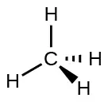
![Three images are shown and labeled, “a,” “b,” and “c.” Image a shows a nitrogen atom single bonded to three hydrogen atoms. There are four oval-shaped orbs that surround each hydrogen and one facing away from the rest of the molecule. These orbs are located in a tetrahedral arrangement. Image b shows a ball-and-stick model of the nitrogen single bonded to the three hydrogen atoms. Image c is the same as image a, but there are four curved, double headed arrows that circle the molecule and are labeled, “106.8 degrees.”](img/cnx-chem-07-06-nh3.webp)
As seen in Figure 7.18, small distortions from the ideal angles in Figure 7.16 can result from differences in repulsion between various regions of electron density. VSEPR theory predicts these distortions by establishing an order of repulsions and an order of the amount of space occupied by different kinds of electron pairs. The order of electron-pair repulsions from greatest to least repulsion is:
This order of repulsions determines the amount of space occupied by different regions of electrons. A lone pair of electrons occupies a larger region of space than the electrons in a triple bond; in turn, electrons in a triple bond occupy more space than those in a double bond, and so on. The order of sizes from largest to smallest is:
Consider formaldehyde, H2CO, which is used as a preservative for biological and anatomical specimens (Figure 7.14). This molecule has regions of high electron density that consist of two single bonds and one double bond. The basic geometry is trigonal planar with 120° bond angles, but we see that the double bond causes slightly larger angles (121°), and the angle between the single bonds is slightly smaller (118°).
In the ammonia molecule, the three hydrogen atoms attached to the central nitrogen are not arranged in a flat, trigonal planar molecular structure, but rather in a three-dimensional trigonal pyramid (Figure 7.18) with the nitrogen atom at the apex and the three hydrogen atoms forming the base. The ideal bond angles in a trigonal pyramid are based on the tetrahedral electron pair geometry. Again, there are slight deviations from the ideal because lone pairs occupy larger regions of space than do bonding electrons. The H–N–H bond angles in NH3 are slightly smaller than the 109.5° angle in a regular tetrahedron (Figure 7.16) because the lone pair-bonding pair repulsion is greater than the bonding pair-bonding pair repulsion (Figure 7.18). Figure 7.19 illustrates the ideal molecular structures, which are predicted based on the electron-pair geometries for various combinations of lone pairs and bonding pairs.
![A table is shown that is comprised of six rows and six columns. The header row reads: “Number of Electron Regions,” “Electron region geometries; 0 lone pair,” “1 lone pair,” “2 lone pairs,” “3 lone pairs,” and “4 lone pairs.” The first column contains the numbers 2, 3, 4, 5, and 6. The first space in the second column contains a structure in which the letter E is single bonded to the letter X on each side. The angle of the bonds is labeled with a curved, double headed arrow and the value, “180 degrees.” The structure is labeled, “Linear.” The second space in the second column contains a structure in which the letter E is single bonded to the letter X on three sides. The angle between the bonds is labeled with a curved, double headed arrow and the value, “120 degrees.” The structure is labeled, “Trigonal planar.” The third space in the second column contains a structure in which the letter E is single bonded to the letter X four times. The angle between the bonds is labeled with a curved, double headed arrow and the value, “109 degrees.” The structure is labeled, “Tetrahedral.” The fourth space in the second column contains a structure in which the letter E is single bonded to the letter X on five sides. The angle between the bonds is labeled with a curved, double headed arrow and the values “90 and 120 degrees.” The structure is labeled, “Trigonal bipyramid.” The fifth space in the second column contains a structure in which the letter E is single bonded to the letter X on six sides. The angle between the bonds is labeled with a curved, double headed arrow and the value, “90 degrees.” The structure is labeled, “Octahedral.” The first space in the third column is empty while the second contains a structure in which the letter E is single bonded to the letter X on each side and has a lone pair of electrons. The angle between the bonds is labeled with a curved, double headed arrow and the value, “less than 120 degrees.” The structure is labeled, “Bent or angular.” The third space in the third column contains a structure in which the letter E is single bonded to the letter X three times and to a lone pair of electrons. It is labeled with a curved, double headed arrow and the value, “less than 109 degrees.” The structure is labeled, “Trigonal pyramid.” The fourth space in the third column contains a structure in which the letter E is single bonded to the letter X on four sides and has a lone pair of electrons. The bond angle is labeled with a curved, double headed arrow and the values, “less than 90 and less than 120 degrees.” The structure is labeled, “Sawhorse or seesaw.” The fifth space in the third column contains a structure in which the letter E is single bonded to the letter X on five sides and has a lone pair of electrons. The bond angle is labeled with a curved, double headed arrow and the value, “less than 90 degrees.” The structure is labeled, “Square pyramidal.” The first and second spaces in the fourth column are empty while the third contains a structure in which the letter E is single bonded to the letter X on each side and has two lone pairs of electrons. The bond angle is labeled with a curved, double headed arrow and the value, “less than less than 109 degrees.” The structure is labeled, “Bent or angular.” The fourth space in the fourth column contains a structure in which the letter E is single bonded to the letter X three times and to two lone pairs of electrons. The bond angle is labeled with a curved, double headed arrow and the value, “less than 90 degrees.” The structure is labeled, “T - shape.” The fifth space in the fourth column contains a structure in which the letter E is single bonded to the letter X on four sides and has two lone pairs of electrons. The bond angle is labeled with a curved, double headed arrow and the value “90 degrees.” The structure is labeled, “Square planar.” The first, second and third spaces in the fifth column are empty while the fourth contains a structure in which the letter E is single bonded to the letter X on each side and has three lone pairs of electrons. The bond angle is labeled with a curved, double headed arrow and the value, “180 degrees.” The structure is labeled, “Linear.” The fifth space in the fifth column contains a structure in which the letter E is single bonded to the letter X three times and to three lone pairs of electrons. The bond angle is labeled with a curved, double headed arrow and the value, “less than 90 degrees.” The structure is labeled, “T - shape.” The first, second, third, and fourth spaces in the sixth column are empty while the fifth contains a structure in which the letter E is single bonded to the letter X on each side and has four lone pairs of electrons. The bond angle is labeled with a curved, double headed arrow and the value “180 degrees.” The structure is labeled, “Linear.” All the structures use wedges and dashes to give them three dimensional appearances.](img/cnx-chem-07-06-molgeom.webp)
According to VSEPR theory, the terminal atom locations (Xs in Figure 7.19) are equivalent within the linear, trigonal planar, and tetrahedral electron-pair geometries (the first three rows of the table). It does not matter which X is replaced with a lone pair because the molecules can be rotated to convert positions. For trigonal bipyramidal electron-pair geometries, however, there are two distinct X positions, as shown in Figure 7.20: an axial position (if we hold a model of a trigonal bipyramid by the two axial positions, we have an axis around which we can rotate the model) and an equatorial position (three positions form an equator around the middle of the molecule). As shown in Figure 7.19, the axial position is surrounded by bond angles of 90°, whereas the equatorial position has more space available because of the 120° bond angles. In a trigonal bipyramidal electron-pair geometry, lone pairs always occupy equatorial positions because these more spacious positions can more easily accommodate the larger lone pairs.
Theoretically, we can come up with three possible arrangements for the three bonds and two lone pairs for the ClF3 molecule (Figure 7.20). The stable structure is the one that puts the lone pairs in equatorial locations, giving a T-shaped molecular structure.
![Four sets of images are shown and labeled, “a,” “b,” “c,” and “d.” Each image is separated by a dashed vertical line. Image a shows a six-faced, bi-pyramidal structure where the central vertical axis is labeled, “Axial,” and the horizontal plane is labeled, “Equatorial.” Image b shows a pair of diagrams in the same shape as image a, but in these diagrams, the left has a chlorine atom in the center while the right has a chlorine atom in the center, two fluorine atoms on the upper and lower ends, and one fluorine in the left horizontal position. Image c shows a pair of diagrams in the same shape as image a, but in these diagrams, the left has a chlorine atom in the center while the right has a chlorine atom in the center and three fluorine atoms in each horizontal position. Image d shows a pair of diagrams in the same shape as image a, but in these diagrams, the left has a chlorine atom in the center while the right has a chlorine atom in the center, two fluorine atoms in the horizontal positions, and one in the axial bottom position.](img/cnx-chem-07-06-axeq.webp)
When a central atom has two lone electron pairs and four bonding regions, we have an octahedral electron-pair geometry. The two lone pairs are on opposite sides of the octahedron (180° apart), giving a square planar molecular structure that minimizes lone pair-lone pair repulsions (Figure 7.19).
Predicting Electron Pair Geometry and Molecular Structure¶
The following procedure uses VSEPR theory to determine the electron pair geometries and the molecular structures:
- Write the Lewis structure of the molecule or polyatomic ion.
- Count the number of regions of electron density (lone pairs and bonds) around the central atom. A single, double, or triple bond counts as one region of electron density.
- Identify the electron-pair geometry based on the number of regions of electron density: linear, trigonal planar, tetrahedral, trigonal bipyramidal, or octahedral (Figure 7.19, first column).
- Use the number of lone pairs to determine the molecular structure (Figure 7.19). If more than one arrangement of lone pairs and chemical bonds is possible, choose the one that will minimize repulsions, remembering that lone pairs occupy more space than multiple bonds, which occupy more space than single bonds. In trigonal bipyramidal arrangements, repulsion is minimized when every lone pair is in an equatorial position. In an octahedral arrangement with two lone pairs, repulsion is minimized when the lone pairs are on opposite sides of the central atom.
The following examples illustrate the use of VSEPR theory to predict the molecular structure of molecules or ions that have no lone pairs of electrons. In this case, the molecular structure is identical to the electron pair geometry.
Example 7.11 Predicting Electron-pair Geometry and Molecular Structure: CO2 and BCl3
Predict the electron-pair geometry and molecular structure for each of the following:
(a) carbon dioxide, CO2, a molecule produced by the combustion of fossil fuels
(b) boron trichloride, BCl3, an important industrial chemical
Solution
(a) We write the Lewis structure of CO2 as:
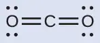
This shows us two regions of high electron density around the carbon atom—each double bond counts as one region, and there are no lone pairs on the carbon atom. Using VSEPR theory, we predict that the two regions of electron density arrange themselves on opposite sides of the central atom with a bond angle of 180°. The electron-pair geometry and molecular structure are identical, and CO2 molecules are linear.
(b) We write the Lewis structure of BCl3 as:
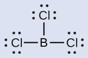
Thus we see that BCl3 contains three bonds, and there are no lone pairs of electrons on boron. The arrangement of three regions of high electron density gives a trigonal planar electron-pair geometry. The B–Cl bonds lie in a plane with 120° angles between them. BCl3 also has a trigonal planar molecular structure (Figure 7.21).
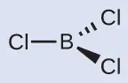
The electron-pair geometry and molecular structure of BCl3 are both trigonal planar. Note that the VSEPR geometry indicates the correct bond angles (120°), unlike the Lewis structure shown above.
Check Your Learning
Carbonate, \(\text{CO}_{3}{}^{\text{2−}},\) is a common polyatomic ion found in various materials from eggshells to antacids. What are the electron-pair geometry and molecular structure of this polyatomic ion?
Answer:
The electron-pair geometry is trigonal planar and the molecular structure is trigonal planar. Due to resonance, all three C–O bonds are identical. Whether they are single, double, or an average of the two, each bond counts as one region of electron density.
Example 7.12 Predicting Electron-pair Geometry and Molecular Structure: Ammonium
Two of the top 50 chemicals produced in the United States, ammonium nitrate and ammonium sulfate, both used as fertilizers, contain the ammonium ion. Predict the electron-pair geometry and molecular structure of the \(\text{NH}_{4}{}^{\text{+}}\) cation.
Solution
We write the Lewis structure of \(\text{NH}_{4}{}^{\text{+}}\) as:
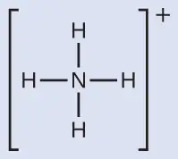
We can see that \(\text{NH}_{4}{}^{+}\) contains four bonds from the nitrogen atom to hydrogen atoms and no lone pairs. We expect the four regions of high electron density to arrange themselves so that they point to the corners of a tetrahedron with the central nitrogen atom in the middle (Figure 7.19). Therefore, the electron pair geometry of \(\text{NH}_{4}{}^{\text{+}}\) is tetrahedral, and the molecular structure is also tetrahedral (Figure 7.22).
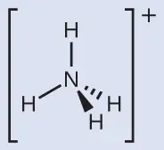
Check Your Learning
Identify a molecule with trigonal bipyramidal molecular structure.
Answer:
Any molecule with five electron pairs around the central atoms including no lone pairs will be trigonal bipyramidal. PF5 is a common example.
The next several examples illustrate the effect of lone pairs of electrons on molecular structure.
Example 7.13 Predicting Electron-pair Geometry and Molecular Structure: Lone Pairs on the Central Atom
Predict the electron-pair geometry and molecular structure of a water molecule.
Solution
The Lewis structure of H2O indicates that there are four regions of high electron density around the oxygen atom: two lone pairs and two chemical bonds:
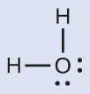
We predict that these four regions are arranged in a tetrahedral fashion (Figure 7.23), as indicated in Figure 7.19. Thus, the electron-pair geometry is tetrahedral and the molecular structure is bent with an angle slightly less than 109.5°. In fact, the bond angle is 104.5°.
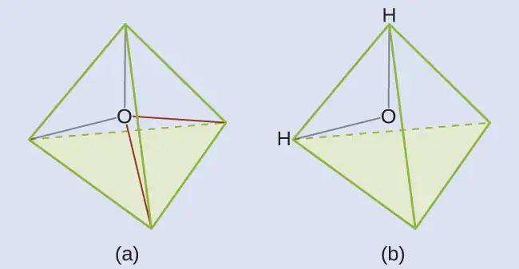
Check Your Learning
The hydronium ion, H3O+, forms when acids are dissolved in water. Predict the electron-pair geometry and molecular structure of this cation.
Answer:
electron pair geometry: tetrahedral; molecular structure: trigonal pyramidal
Example 7.14 Predicting Electron-pair Geometry and Molecular Structure: SF4
Sulfur tetrafluoride, SF4, is extremely valuable for the preparation of fluorine-containing compounds used as herbicides (i.e., SF4 is used as a fluorinating agent). Predict the electron-pair geometry and molecular structure of a SF4 molecule.
Solution
The Lewis structure of SF4 indicates five regions of electron density around the sulfur atom: one lone pair and four bonding pairs:
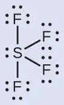
We expect these five regions to adopt a trigonal bipyramidal electron-pair geometry. To minimize lone pair repulsions, the lone pair occupies one of the equatorial positions. The molecular structure (Figure 7.24) is that of a seesaw (Figure 7.19).
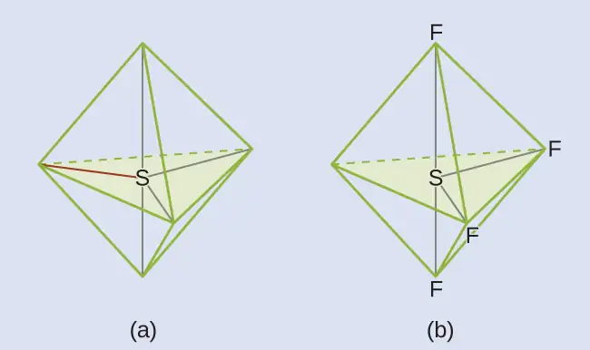
Check Your Learning
Predict the electron pair geometry and molecular structure for molecules of XeF2.
Answer:
The electron-pair geometry is trigonal bipyramidal. The molecular structure is linear.
Example 7.15 Predicting Electron-pair Geometry and Molecular Structure: XeF4
Of all the noble gases, xenon is the most reactive, frequently reacting with elements such as oxygen and fluorine. Predict the electron-pair geometry and molecular structure of the XeF4 molecule.
Solution
The Lewis structure of XeF4 indicates six regions of high electron density around the xenon atom: two lone pairs and four bonds:
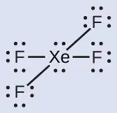
These six regions adopt an octahedral arrangement (Figure 7.19), which is the electron-pair geometry. To minimize repulsions, the lone pairs should be on opposite sides of the central atom (Figure 7.25). The five atoms are all in the same plane and have a square planar molecular structure.
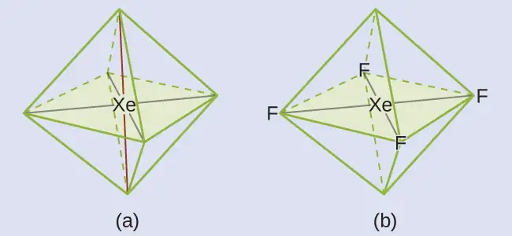
Check Your Learning
In a certain molecule, the central atom has three lone pairs and two bonds. What will the electron pair geometry and molecular structure be?
Answer:
electron pair geometry: trigonal bipyramidal; molecular structure: linear
Molecular Structure for Multicenter Molecules¶
When a molecule or polyatomic ion has only one central atom, the molecular structure completely describes the shape of the molecule. Larger molecules do not have a single central atom, but are connected by a chain of interior atoms that each possess a “local” geometry. The way these local structures are oriented with respect to each other also influences the molecular shape, but such considerations are largely beyond the scope of this introductory discussion. For our purposes, we will only focus on determining the local structures.
Example 7.16 Predicting Structure in Multicenter Molecules
The Lewis structure for the simplest amino acid, glycine, H2NCH2CO2H, is shown here. Predict the local geometry for the nitrogen atom, the two carbon atoms, and the oxygen atom with a hydrogen atom attached:
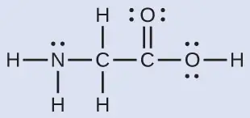
Solution
![A Lewis structure depicts a nitrogen atom with one lone pair of electrons that is single bonded to two hydrogen atoms and a carbon atom. The atoms described are drawn with bonds that indicate a three-dimensional, tetrahedral shape around the nitrogen atom. The carbon is, in turn, single bonded to two hydrogen atoms and another carbon atom, and again, a tetrahedral, three dimensional configuration is indicated by the types of bonds. This second carbon atom is double bonded to an oxygen atom and single bonded to an oxygen that has two lone pairs of electrons and a single bond to a hydrogen atom.](img/cnx-chem-07-06-gly3d-img.webp)
Consider each central atom independently. The electron-pair geometries:
- nitrogen––four regions of electron density; tetrahedral
- carbon (CH2)––four regions of electron density; tetrahedral
- carbon (CO2)—three regions of electron density; trigonal planar
- oxygen (OH)—four regions of electron density; tetrahedral
The local structures:
- nitrogen––three bonds, one lone pair; trigonal pyramidal
- carbon (CH2)—four bonds, no lone pairs; tetrahedral
- carbon (CO2)—three bonds (double bond counts as one bond), no lone pairs; trigonal planar
- oxygen (OH)—two bonds, two lone pairs; bent (109°)
Check Your Learning
Another amino acid is alanine, which has the Lewis structure shown here. Predict the electron-pair geometry and local structure of the nitrogen atom, the three carbon atoms, and the oxygen atom with hydrogen attached:
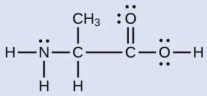
Answer:
electron-pair geometries: nitrogen––tetrahedral; carbon (CH)—tetrahedral; carbon (CH3)—tetrahedral; carbon (CO2)—trigonal planar; oxygen (OH)—tetrahedral; local structures: nitrogen—trigonal pyramidal; carbon (CH)—tetrahedral; carbon (CH3)—tetrahedral; carbon (CO2)—trigonal planar; oxygen (OH)—bent (109°)
Link to Learning
The molecular shape simulator lets you build various molecules and practice naming their electron-pair geometries and molecular structures.
Example 7.17 Molecular Simulation
Using molecular shape simulator allows us to control whether bond angles and/or lone pairs are displayed by checking or unchecking the boxes under “Options” on the right. We can also use the “Name” checkboxes at bottom-left to display or hide the electron pair geometry (called “electron geometry” in the simulator) and/or molecular structure (called “molecular shape” in the simulator).
Build the molecule HCN in the simulator based on the following Lewis structure:
Click on each bond type or lone pair at right to add that group to the central atom. Once you have the complete molecule, rotate it to examine the predicted molecular structure. What molecular structure is this?
Solution
The molecular structure is linear.
Check Your Learning
Build a more complex molecule in the simulator. Identify the electron-group geometry, molecular structure, and bond angles. Then try to find a chemical formula that would match the structure you have drawn.
Answer:
Answers will vary. For example, an atom with four single bonds, a double bond, and a lone pair has an octahedral electron-group geometry and a square pyramidal molecular structure. XeOF4 is a molecule that adopts this structure.
Molecular Polarity and Dipole Moment¶
As discussed previously, polar covalent bonds connect two atoms with differing electronegativities, leaving one atom with a partial positive charge (δ+) and the other atom with a partial negative charge (δ–), as the electrons are pulled toward the more electronegative atom. This separation of charge gives rise to a bond dipole moment. The magnitude of a bond dipole moment is represented by the Greek letter mu (µ) and is given by the formula shown here, where Q is the magnitude of the partial charges (determined by the electronegativity difference) and r is the distance between the charges:
This bond moment can be represented as a vector, a quantity having both direction and magnitude (Figure 7.26). Dipole vectors are shown as arrows pointing along the bond from the less electronegative atom toward the more electronegative atom. A small plus sign is drawn on the less electronegative end to indicate the partially positive end of the bond. The length of the arrow is proportional to the magnitude of the electronegativity difference between the two atoms.
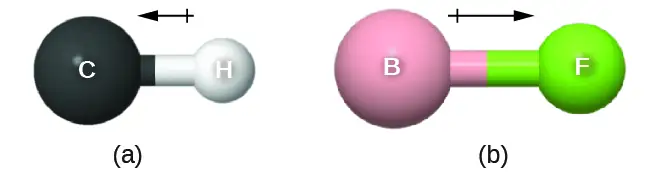
A whole molecule may also have a separation of charge, depending on its molecular structure and the polarity of each of its bonds. If such a charge separation exists, the molecule is said to be a polar molecule (or dipole); otherwise the molecule is said to be nonpolar. The dipole moment measures the extent of net charge separation in the molecule as a whole. We determine the dipole moment by adding the bond moments in three-dimensional space, taking into account the molecular structure.
For diatomic molecules, there is only one bond, so its bond dipole moment determines the molecular polarity. Homonuclear diatomic molecules such as Br2 and N2 have no difference in electronegativity, so their dipole moment is zero. For heteronuclear molecules such as CO, there is a small dipole moment. For HF, there is a larger dipole moment because there is a larger difference in electronegativity.
When a molecule contains more than one bond, the geometry must be taken into account. If the bonds in a molecule are arranged such that their bond moments cancel (vector sum equals zero), then the molecule is nonpolar. This is the situation in CO2 (Figure 7.27). Each of the bonds is polar, but the molecule as a whole is nonpolar. From the Lewis structure, and using VSEPR theory, we determine that the CO2 molecule is linear with polar C=O bonds on opposite sides of the carbon atom. The bond moments cancel because they are pointed in opposite directions. In the case of the water molecule (Figure 7.27), the Lewis structure again shows that there are two bonds to a central atom, and the electronegativity difference again shows that each of these bonds has a nonzero bond moment. In this case, however, the molecular structure is bent because of the lone pairs on O, and the two bond moments do not cancel. Therefore, water does have a net dipole moment and is a polar molecule (dipole).
![Two images are shown and labeled, “a” and “b.” Image a shows a carbon atom bonded to two oxygen atoms in a ball-and-stick representation. Two arrows face away from the center of the molecule in opposite directions and are drawn horizontally like the molecule. These arrows are labeled, “Bond moments,” and the image is labeled, “Overall dipole moment equals 0.” Image b shows an oxygen atom bonded to two hydrogen atoms in a downward-facing v-shaped arrangement. An upward-facing, vertical arrow is drawn below the molecule while two upward and inward facing arrows are drawn above the molecule. The upper arrows are labeled, “Bond moments,” while the image is labeled, “Overall dipole moment.”](img/cnx-chem-07-06-co2h2odip.webp)
The OCS molecule has a structure similar to CO2, but a sulfur atom has replaced one of the oxygen atoms. To determine if this molecule is polar, we draw the molecular structure. VSEPR theory predicts a linear molecule:
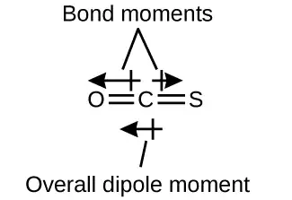
The C-O bond is considerably polar. Although C and S have very similar electronegativity values, S is slightly more electronegative than C, and so the C-S bond is just slightly polar. Because oxygen is more electronegative than sulfur, the oxygen end of the molecule is the negative end.
Chloromethane, CH3Cl, is a tetrahedral molecule with three slightly polar C-H bonds and a more polar C-Cl bond. The relative electronegativities of the bonded atoms is H < C < Cl, and so the bond moments all point toward the Cl end of the molecule and sum to yield a considerable dipole moment (the molecules are relatively polar).
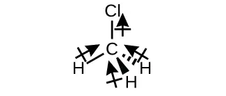
For molecules of high symmetry such as BF3 (trigonal planar), CH4 (tetrahedral), PF5 (trigonal bipyramidal), and SF6 (octahedral), all the bonds are of identical polarity (same bond moment) and they are oriented in geometries that yield nonpolar molecules (dipole moment is zero). Molecules of less geometric symmetry, however, may be polar even when all bond moments are identical. For these molecules, the directions of the equal bond moments are such that they sum to give a nonzero dipole moment and a polar molecule. Examples of such molecules include hydrogen sulfide, H2S (nonlinear), and ammonia, NH3 (trigonal pyramidal).
![Two Lewis structures are shown. The left structure shows a sulfur atom with two lone pairs of electrons single bonded to two hydrogen atoms. Near the sulfur is a dipole symbol with a superscripted negative sign. Near each hydrogen is a dipole symbol with a superscripted positive sign. The right structure shows a nitrogen atom with one lone pair of electrons single bonded to three hydrogen atoms. Near the nitrogen is a dipole symbol with a superscripted negative sign. Near each hydrogen is a dipole symbol with a superscripted positive sign.](img/cnx-chem-07-06-sh2nh3-img.webp)
To summarize, to be polar, a molecule must:
- Contain at least one polar covalent bond.
- Have a molecular structure such that the sum of the vectors of each bond dipole moment does not cancel.
Properties of Polar Molecules¶
Polar molecules tend to align when placed in an electric field with the positive end of the molecule oriented toward the negative plate and the negative end toward the positive plate (Figure 7.28). We can use an electrically charged object to attract polar molecules, but nonpolar molecules are not attracted. Also, polar solvents are better at dissolving polar substances, and nonpolar solvents are better at dissolving nonpolar substances.
![Two diagrams are shown and labeled “a” and “b.” Diagram a shows two vertical, gray electrodes. There are five molecules in between. The molecules are separate from one another and are composed of a hydrogen atom bonded to a fluorine atom. The fluorine atom is labeled with a dipole symbol and a superscripted negative sign while the hydrogen atom is labeled with a dipole symbol and a superscripted positive sign. The molecules are randomly oriented in the space. The right diagram also shows two vertical gray electrodes, the left labeled as negative and the right labeled as positive. The space between is yellow. The same molecules are present, but this time they are all facing horizontally, with the hydrogen-end of each molecule facing toward the negative electrode.](img/cnx-chem-07-06-dipolfield.webp)
Link to Learning
The molecule polarity simulation provides many ways to explore dipole moments of bonds and molecules.
Example 7.18 Polarity Simulations
Open the molecule polarity simulation and select the “Three Atoms” tab at the top. This should display a molecule ABC with three electronegativity adjustors. You can display or hide the bond moments, molecular dipoles, and partial charges at the right. Turning on the Electric Field will show whether the molecule moves when exposed to a field, similar to Figure 7.28.
Use the electronegativity controls to determine how the molecular dipole will look for the starting bent molecule if:
(a) A and C are very electronegative and B is in the middle of the range.
(b) A is very electronegative, and B and C are not.
Solution
(a) Molecular dipole moment points immediately between A and C.
(b) Molecular dipole moment points along the A–B bond, toward A.
Check Your Learning
Determine the partial charges that will give the largest possible bond dipoles.
Answer:
The largest bond moments will occur with the largest partial charges. The two solutions above represent how unevenly the electrons are shared in the bond. The bond moments will be maximized when the electronegativity difference is greatest. The controls for A and C should be set to one extreme, and B should be set to the opposite extreme. Although the magnitude of the bond moment will not change based on whether B is the most electronegative or the least, the direction of the bond moment will.
Chapter Review¶
Key Terms¶
- axial position
- location in a trigonal bipyramidal geometry in which there is another atom at a 180° angle and the equatorial positions are at a 90° angle
- bond angle
- angle between any two covalent bonds that share a common atom
- bond dipole moment
- separation of charge in a bond that depends on the difference in electronegativity and the bond distance represented by partial charges or a vector
- bond distance
- (also, bond length) distance between the nuclei of two bonded atoms
- bond energy
- (also, bond dissociation energy) energy required to break a covalent bond in a gaseous substance
- bond length
- distance between the nuclei of two bonded atoms at which the lowest potential energy is achieved
- Born-Haber cycle
- thermochemical cycle relating the various energetic steps involved in the formation of an ionic solid from the relevant elements
- covalent bond
- bond formed when electrons are shared between atoms
- dipole moment
- property of a molecule that describes the separation of charge determined by the sum of the individual bond moments based on the molecular structure
- double bond
- covalent bond in which two pairs of electrons are shared between two atoms
- electron-pair geometry
- arrangement around a central atom of all regions of electron density (bonds, lone pairs, or unpaired electrons)
- electronegativity
- tendency of an atom to attract electrons in a bond to itself
- equatorial position
- one of the three positions in a trigonal bipyramidal geometry with 120° angles between them; the axial positions are located at a 90° angle
- formal charge
- charge that would result on an atom by taking the number of valence electrons on the neutral atom and subtracting the nonbonding electrons and the number of bonds (one-half of the bonding electrons)
- free radical
- molecule that contains an odd number of electrons
- hypervalent molecule
- molecule containing at least one main group element that has more than eight electrons in its valence shell
- inert pair effect
- tendency of heavy atoms to form ions in which their valence s electrons are not lost
- ionic bond
- strong electrostatic force of attraction between cations and anions in an ionic compound
- lattice energy (ΔHlattice)
- energy required to separate one mole of an ionic solid into its component gaseous ions
- Lewis structure
- diagram showing lone pairs and bonding pairs of electrons in a molecule or an ion
- Lewis symbol
- symbol for an element or monatomic ion that uses a dot to represent each valence electron in the element or ion
- linear
- shape in which two outside groups are placed on opposite sides of a central atom
- lone pair
- two (a pair of) valence electrons that are not used to form a covalent bond
- molecular structure
- arrangement of atoms in a molecule or ion
- molecular structure
- structure that includes only the placement of the atoms in the molecule
- octahedral
- shape in which six outside groups are placed around a central atom such that a three-dimensional shape is generated with four groups forming a square and the other two forming the apex of two pyramids, one above and one below the square plane
- octet rule
- guideline that states main group atoms will form structures in which eight valence electrons interact with each nucleus, counting bonding electrons as interacting with both atoms connected by the bond
- polar covalent bond
- covalent bond between atoms of different electronegativities; a covalent bond with a positive end and a negative end
- polar molecule
- (also, dipole) molecule with an overall dipole moment
- pure covalent bond
- (also, nonpolar covalent bond) covalent bond between atoms of identical electronegativities
- resonance
- situation in which one Lewis structure is insufficient to describe the bonding in a molecule and the average of multiple structures is observed
- resonance forms
- two or more Lewis structures that have the same arrangement of atoms but different arrangements of electrons
- resonance hybrid
- average of the resonance forms shown by the individual Lewis structures
- single bond
- bond in which a single pair of electrons is shared between two atoms
- tetrahedral
- shape in which four outside groups are placed around a central atom such that a three-dimensional shape is generated with four corners and 109.5° angles between each pair and the central atom
- trigonal bipyramidal
- shape in which five outside groups are placed around a central atom such that three form a flat triangle with 120° angles between each pair and the central atom, and the other two form the apex of two pyramids, one above and one below the triangular plane
- trigonal planar
- shape in which three outside groups are placed in a flat triangle around a central atom with 120° angles between each pair and the central atom
- triple bond
- bond in which three pairs of electrons are shared between two atoms
- valence shell electron-pair repulsion theory (VSEPR)
- theory used to predict the bond angles in a molecule based on positioning regions of high electron density as far apart as possible to minimize electrostatic repulsion
- vector
- quantity having magnitude and direction
Key Equations¶
7.4 Formal Charges and Resonance¶
| \(\text{formal charge}\:=\text{\# valence shell electrons (free atom)}\,-\:\text{\# lone pair electrons}\:-\:\frac{1}{2}\;\text{\# bonding electrons}\) |
7.5 Strengths of Ionic and Covalent Bonds¶
| Bond energy for a diatomic molecule: \(\text{XY}(g)\:\longrightarrow\:\text{X}(g)+\text{Y}(g)\hspace{3.0em}\text{D}_{\text{X–Y}}=\Delta H{}^{\circ}\) |
| Enthalpy change: ΔH = ƩDbonds broken – ƩDbonds formed |
| Lattice energy for a solid MX: \(\text{MX}(s)\:\longrightarrow\:\text{M}^{n\text{+}}(g)+\text{X}^{n-}(g)\hspace{3.0em}\Delta H_{\text{lattice}}\) |
| Lattice energy for an ionic crystal: \(\Delta H_{\text{lattice}}=\:\frac{\text{C}(\text{Z}^{\text{+}})(\text{Z}^{-})}{\text{R}_{\text{o}}}\) |
Key Concepts and Summary¶
7.1 Ionic Bonding¶
Atoms gain or lose electrons to form ions with particularly stable electron configurations. The charges of cations formed by the representative metals may be determined readily because, with few exceptions, the electronic structures of these ions have either a noble gas configuration or a completely filled electron shell. The charges of anions formed by the nonmetals may also be readily determined because these ions form when nonmetal atoms gain enough electrons to fill their valence shells.
7.2 Covalent Bonding¶
Covalent bonds form when electrons are shared between atoms and are attracted by the nuclei of both atoms. In pure covalent bonds, the electrons are shared equally. In polar covalent bonds, the electrons are shared unequally, as one atom exerts a stronger force of attraction on the electrons than the other. The ability of an atom to attract a pair of electrons in a chemical bond is called its electronegativity. The difference in electronegativity between two atoms determines how polar a bond will be. In a diatomic molecule with two identical atoms, there is no difference in electronegativity, so the bond is nonpolar or pure covalent. When the electronegativity difference is very large, as is the case between metals and nonmetals, the bonding is characterized as ionic.
7.3 Lewis Symbols and Structures¶
Valence electronic structures can be visualized by drawing Lewis symbols (for atoms and monatomic ions) and Lewis structures (for molecules and polyatomic ions). Lone pairs, unpaired electrons, and single, double, or triple bonds are used to indicate where the valence electrons are located around each atom in a Lewis structure. Most structures—especially those containing second row elements—obey the octet rule, in which every atom (except H) is surrounded by eight electrons. Exceptions to the octet rule occur for odd-electron molecules (free radicals), electron-deficient molecules, and hypervalent molecules.
7.4 Formal Charges and Resonance¶
In a Lewis structure, formal charges can be assigned to each atom by treating each bond as if one-half of the electrons are assigned to each atom. These hypothetical formal charges are a guide to determining the most appropriate Lewis structure. A structure in which the formal charges are as close to zero as possible is preferred. Resonance occurs in cases where two or more Lewis structures with identical arrangements of atoms but different distributions of electrons can be written. The actual distribution of electrons (the resonance hybrid) is an average of the distribution indicated by the individual Lewis structures (the resonance forms).
7.5 Strengths of Ionic and Covalent Bonds¶
The strength of a covalent bond is measured by its bond dissociation energy, that is, the amount of energy required to break that particular bond in a mole of molecules. Multiple bonds are stronger than single bonds between the same atoms. The enthalpy of a reaction can be estimated based on the energy input required to break bonds and the energy released when new bonds are formed. For ionic bonds, the lattice energy is the energy required to separate one mole of a compound into its gas phase ions. Lattice energy increases for ions with higher charges and shorter distances between ions. Lattice energies are often calculated using the Born-Haber cycle, a thermochemical cycle including all of the energetic steps involved in converting elements into an ionic compound.
7.6 Molecular Structure and Polarity¶
VSEPR theory predicts the three-dimensional arrangement of atoms in a molecule. It states that valence electrons will assume an electron-pair geometry that minimizes repulsions between areas of high electron density (bonds and/or lone pairs). Molecular structure, which refers only to the placement of atoms in a molecule and not the electrons, is equivalent to electron-pair geometry only when there are no lone electron pairs around the central atom. A dipole moment measures a separation of charge. For one bond, the bond dipole moment is determined by the difference in electronegativity between the two atoms. For a molecule, the overall dipole moment is determined by both the individual bond moments and how these dipoles are arranged in the molecular structure. Polar molecules (those with an appreciable dipole moment) interact with electric fields, whereas nonpolar molecules do not.
Exercises¶
7.1 Ionic Bonding¶
1. Does a cation gain protons to form a positive charge or does it lose electrons?
Answer
The protons in the nucleus do not change during normal chemical reactions. Only the outer electrons move. Positive charges form when electrons are lost.
2. Iron(III) sulfate [Fe2(SO4)3] is composed of Fe3+ and \(\text{SO}_{4}{}^{\text{2−}}\) ions. Explain why a sample of iron(III) sulfate is uncharged.
3. Which of the following atoms would be expected to form negative ions in binary ionic compounds and which would be expected to form positive ions: P, I, Mg, Cl, In, Cs, O, Pb, Co?
Answer
P, I, Cl, and O would form anions because they are nonmetals. Mg, In, Cs, Pb, and Co would form cations because they are metals.
4. Which of the following atoms would be expected to form negative ions in binary ionic compounds and which would be expected to form positive ions: Br, Ca, Na, N, F, Al, Sn, S, Cd?
5. Predict the charge on the monatomic ions formed from the following atoms in binary ionic compounds:
(a) P
(b) Mg
(c) Al
(d) O
(e) Cl
(f) Cs
Answer
(a) P3–; (b) Mg2+; (c) Al3+; (d) O2–; (e) Cl–; (f) Cs+
6. Predict the charge on the monatomic ions formed from the following atoms in binary ionic compounds:
(a) I
(b) Sr
(c) K
(d) N
(e) S
(f) In
7. Write the electron configuration for each of the following ions:
(a) As3–
(b) I–
(c) Be2+
(d) Cd2+
(e) O2–
(f) Ga3+
(g) Li+
(h) N3–
(i) Sn2+
(j) Co2+
(k) Fe2+
(l) As3+
Answer
(a) [Ar]4s23d104p6; (b) [Kr]4d105s25p6 (c) 1s2 (d) [Kr]4d10; (e) [He]2s22p6; (f) [Ar]3d10; (g) 1s2 (h) [He]2s22p6 (i) [Kr]4d105s2 (j) [Ar]3d7 (k) [Ar]3d6, (l) [Ar]3d104s2
8. Write the electron configuration for the monatomic ions formed from the following elements (which form the greatest concentration of monatomic ions in seawater):
(a) Cl
(b) Na
(c) Mg
(d) Ca
(e) K
(f) Br
(g) Sr
(h) F
9. Write out the full electron configuration for each of the following atoms and for the monatomic ion found in binary ionic compounds containing the element:
(a) Al
(b) Br
(c) Sr
(d) Li
(e) As
(f) S
Answer
(a) 1s22s22p63s23p1; Al3+: 1s22s22p6; (b) 1s22s22p63s23p63d104s24p5; 1s22s22p63s23p63d104s24p6; (c) 1s22s22p63s23p63d104s24p65s2; Sr2+: 1s22s22p63s23p63d104s24p6; (d) 1s22s1; Li+: 1s2; (e) 1s22s22p63s23p63d104s24p3; 1s22s22p63s23p63d104s24p6; (f) 1s22s22p63s23p4; 1s22s22p63s23p6
10. From the labels of several commercial products, prepare a list of six ionic compounds in the products. For each compound, write the formula. (You may need to look up some formulas in a suitable reference.)
7.2 Covalent Bonding¶
11. Why is it incorrect to speak of a molecule of solid NaCl?
Answer
NaCl consists of discrete ions arranged in a crystal lattice, not covalently bonded molecules.
12. What information can you use to predict whether a bond between two atoms is covalent or ionic?
13. Predict which of the following compounds are ionic and which are covalent, based on the location of their constituent atoms in the periodic table:
(a) Cl2CO
(b) MnO
(c) NCl3
(d) CoBr2
(e) K2S
(f) CO
(g) CaF2
(h) HI
(i) CaO
(j) IBr
(k) CO2
Answer
ionic: (b), (d), (e), (g), and (i); covalent: (a), (c), (f), (h), (j), and (k)
14. Explain the difference between a nonpolar covalent bond, a polar covalent bond, and an ionic bond.
15. From its position in the periodic table, determine which atom in each pair is more electronegative:
(a) Br or Cl
(b) N or O
(c) S or O
(d) P or S
(e) Si or N
(f) Ba or P
(g) N or K
Answer
(a) Cl; (b) O; (c) O; (d) S; (e) N; (f) P; (g) N
16. From its position in the periodic table, determine which atom in each pair is more electronegative:
(a) N or P
(b) N or Ge
(c) S or F
(d) Cl or S
(e) H or C
(f) Se or P
(g) C or Si
17. From their positions in the periodic table, arrange the atoms in each of the following series in order of increasing electronegativity:
(a) C, F, H, N, O
(b) Br, Cl, F, H, I
(c) F, H, O, P, S
(d) Al, H, Na, O, P
(e) Ba, H, N, O, As
Answer
(a) H, C, N, O, F; (b) H, I, Br, Cl, F; (c) H, P, S, O, F; (d) Na, Al, H, P, O; (e) Ba, H, As, N, O
18. From their positions in the periodic table, arrange the atoms in each of the following series in order of increasing electronegativity:
(a) As, H, N, P, Sb
(b) Cl, H, P, S, Si
(c) Br, Cl, Ge, H, Sr
(d) Ca, H, K, N, Si
(e) Cl, Cs, Ge, H, Sr
19. Which atoms can bond to sulfur so as to produce a positive partial charge on the sulfur atom?
Answer
N, O, F, and Cl
20. Which is the most polar bond?
(a) C–C
(b) C–H
(c) N–H
(d) O–H
(e) Se–H
21. Identify the more polar bond in each of the following pairs of bonds:
(a) HF or HCl
(b) NO or CO
(c) SH or OH
(d) PCl or SCl
(e) CH or NH
(f) SO or PO
(g) CN or NN
Answer
(a) HF; (b) CO; (c) OH; (d) PCl; (e) NH; (f) PO; (g) CN
22. Which of the following molecules or ions contain polar bonds?
(a) O3
(b) S8
(c) \(\text{O}_{2}{}^{\text{2−}}\)
(d) \(\text{NO}_{3}{}^{-}\)
(e) CO2
(f) H2S
(g) \(\text{BH}_{4}{}^{-}\)
7.3 Lewis Symbols and Structures¶
23. Write the Lewis symbols for each of the following ions:
(a) As3–
(b) I–
(c) Be2+
(d) O2–
(e) Ga3+
(f) Li+
(g) N3–
Answer
(a) eight electrons:
(b) eight electrons:
(c) no electrons Be2+
(d) eight electrons:
(e) no electrons Ga3+
(f) no electrons Li+
(g) eight electrons:
24. Many monatomic ions are found in seawater, including the ions formed from the following list of elements. Write the Lewis symbols for the monatomic ions formed from the following elements:
(a) Cl
(b) Na
(c) Mg
(d) Ca
(e) K
(f) Br
(g) Sr
(h) F
25. Write the Lewis symbols of the ions in each of the following ionic compounds and the Lewis symbols of the atom from which they are formed:
(a) MgS
(b) Al2O3
(c) GaCl3
(d) K2O
(e) Li3N
(f) KF
Answer
(a)
(b)
(c)
(d)
(e)
(f)
26. In the Lewis structures listed here, M and X represent various elements in the third period of the periodic table. Write the formula of each compound using the chemical symbols of each element:
(a)
(b)
(c)
(d)
27. Write the Lewis structure for the diatomic molecule P2, an unstable form of phosphorus found in high-temperature phosphorus vapor.
Answer
28. Write Lewis structures for the following:
(a) H2
(b) HBr
(c) PCl3
(d) SF2
(e) H2CCH2
(f) HNNH
(g) H2CNH
(h) NO–
(i) N2
(j) CO
(k) CN–
29. Write Lewis structures for the following:
(a) O2
(b) H2CO
(c) AsF3
(d) ClNO
(e) SiCl4
(f) H3O+
(g) \(\text{NH}_{4}{}^{+}\)
(h) \(\text{BF}_{4}{}^{-}\)
(i) HCCH
(j) ClCN
(k) \(\text{C}_{2}{}^{\text{2+}}\)
Answer
(a)
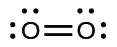
In this case, the Lewis structure is inadequate to depict the fact that experimental studies have shown two unpaired electrons in each oxygen molecule.
(b)
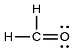
(c)
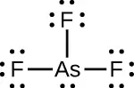
(d)
(e)
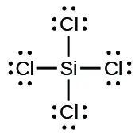
(f)
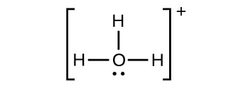
(g)
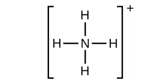
(h)
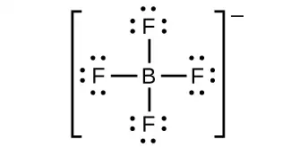
(i)
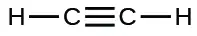
(j)
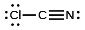
(k)
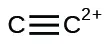
30. Write Lewis structures for the following:
(a) ClF3
(b) PCl5
(c) BF3
(d) \(\text{PF}_{6}{}^{-}\)
31. Write Lewis structures for the following:
(a) SeF6
(b) XeF4
(c) \(\text{SeCl}_{3}{}^{+}\)
(d) Cl2BBCl2 (contains a B–B bond)
Answer
(a) SeF6:
(b) XeF4:
(c) \(\text{SeCl}_{3}{}^{\text{+}}\text{:}\)
(d) Cl2BBCl2:
32. Write Lewis structures for:
(a) \(\text{PO}_{4}{}^{\text{3−}}\)
(b) \(\text{ICl}_{4}{}^{-}\)
(c) \(\text{SO}_{3}{}^{\text{2−}}\)
(d) HONO
33. Correct the following statement: “The bonds in solid PbCl2 are ionic; the bond in a HCl molecule is covalent. Thus, all of the valence electrons in PbCl2 are located on the Cl– ions, and all of the valence electrons in a HCl molecule are shared between the H and Cl atoms.”
Answer
Two valence electrons per Pb atom are transferred to Cl atoms; the resulting Pb2+ ion has a 6s2 valence shell configuration. Two of the valence electrons in the HCl molecule are shared, and the other six are located on the Cl atom as lone pairs of electrons.
34. Write Lewis structures for the following molecules or ions:
(a) SbH3
(b) XeF2
(c) Se8 (a cyclic molecule with a ring of eight Se atoms)
35. Methanol, H3COH, is used as the fuel in some race cars. Ethanol, C2H5OH, is used extensively as motor fuel in Brazil. Both methanol and ethanol produce CO2 and H2O when they burn. Write the chemical equations for these combustion reactions using Lewis structures instead of chemical formulas.
Answer
![Two reactions are shown using Lewis structures. The top reaction shows a carbon atom, single bonded to three hydrogen atoms and single bonded to an oxygen atom with two lone pairs of electrons. The oxygen atom is also bonded to a hydrogen atom. This is followed by a plus sign and the number one point five, followed by two oxygen atoms bonded together with a double bond and each with two lone pairs of electrons. A right-facing arrow leads to a carbon atom that is double bonded to two oxygen atoms, each of which has two lone pairs of electrons. This structure is followed by a plus sign, a number two, and a structure made up of an oxygen with two lone pairs of electrons single bonded to two hydrogen atoms. The bottom reaction shows a carbon atom, single bonded to three hydrogen atoms and single bonded to another carbon atom. The second carbon atom is single bonded to two hydrogen atoms and one oxygen atom with two lone pairs of electrons. The oxygen atom is also bonded to a hydrogen atom. This is followed by a plus sign and the number three, followed by two oxygen atoms bonded together with a double bond. Each oxygen atom has two lone pairs of electrons. A right-facing arrow leads to a number two and a carbon atom that is double bonded to two oxygen atoms, each of which has two lone pairs of electrons. This structure is followed by a plus sign, a number three, and a structure made up of an oxygen with two lone pairs of electrons single bonded to two hydrogen atoms.](img/cnx-chem-07-03-question18-img.webp)
36. Many planets in our solar system contain organic chemicals including methane (CH4) and traces of ethylene (C2H4), ethane (C2H6), propyne (H3CCCH), and diacetylene (HCCCCH). Write the Lewis structures for each of these molecules.
37. Carbon tetrachloride was formerly used in fire extinguishers for electrical fires. It is no longer used for this purpose because of the formation of the toxic gas phosgene, Cl2CO. Write the Lewis structures for carbon tetrachloride and phosgene.
Answer
38. Identify the atoms that correspond to each of the following electron configurations. Then, write the Lewis symbol for the common ion formed from each atom:
(a) 1s22s22p5
(b) 1s22s22p63s2
(c) 1s22s22p63s23p64s23d10
(d) 1s22s22p63s23p64s23d104p4
(e) 1s22s22p63s23p64s23d104p1
39. The arrangement of atoms in several biologically important molecules is given here. Complete the Lewis structures of these molecules by adding multiple bonds and lone pairs. Do not add any more atoms.
(a) the amino acid serine:
(b) urea:
(c) pyruvic acid:
(d) uracil:
(e) carbonic acid:
Answer
(a)
![A Lewis structure is shown. A nitrogen atom is single bonded to two hydrogen atoms and a carbon atom. The carbon atom is single bonded to a hydrogen atom and two other carbon atoms. One of these carbon atoms is single bonded to two hydrogen atoms and an oxygen atom. The oxygen atom is bonded to a hydrogen atom. The other carbon is single bonded to two oxygen atoms, one of which is bonded to a hydrogen atom. The oxygen atoms have two lone pairs of electron dots, and the nitrogen atom has one lone pair of electron dots.](img/cnx-chem-07-03-impbioansa-img.webp)
(b)
(c)
(d)
![A Lewis hexagonal ring structure is shown. From the top of the ring, three carbon atoms, one nitrogen atom, a carbon atom and a nitrogen atom are single bonded to one another. The top carbon is single bonded to an oxygen, the second and third carbons and the nitrogen atom are each single bonded to a hydrogen atom. The next carbon is single bonded to an oxygen atom and the last nitrogen is single bonded to a hydrogen atom. The oxygen atoms have two lone pairs of electron dots, and the nitrogen atoms have one lone pair of electron dots.](img/cnx-chem-07-03-impbioansd-img.webp)
(e)
40. A compound with a molar mass of about 28 g/mol contains 85.7% carbon and 14.3% hydrogen by mass. Write the Lewis structure for a molecule of the compound.
41. A compound with a molar mass of about 42 g/mol contains 85.7% carbon and 14.3% hydrogen by mass. Write the Lewis structure for a molecule of the compound.
Answer
42. Two arrangements of atoms are possible for a compound with a molar mass of about 45 g/mol that contains 52.2% C, 13.1% H, and 34.7% O by mass. Write the Lewis structures for the two molecules.
43. How are single, double, and triple bonds similar? How do they differ?
Answer
Each bond includes a sharing of electrons between atoms. Two electrons are shared in a single bond; four electrons are shared in a double bond; and six electrons are shared in a triple bond.
7.4 Formal Charges and Resonance¶
44. Write resonance forms that describe the distribution of electrons in each of these molecules or ions.
(a) selenium dioxide, OSeO
(b) nitrate ion, \(\text{NO}_{3}{}^{-}\)
(c) nitric acid, HNO3 (N is bonded to an OH group and two O atoms)
(d) benzene, C6H6:
(e) the formate ion:
45. Write resonance forms that describe the distribution of electrons in each of these molecules or ions.
(a) sulfur dioxide, SO2
(b) carbonate ion, \(\text{CO}_{3}{}^{\text{2−}}\)
(c) hydrogen carbonate ion, \(\text{HCO}_{3}{}^{-}\) (C is bonded to an OH group and two O atoms)
(d) pyridine:
(e) the allyl ion:
Answer
(a)
![Two Lewis structures are shown with a double-headed arrow in between. The left structure shows a sulfur atom with a lone pair of electrons single bonded to the left to an oxygen atom with three lone pairs of electrons. The sulfur atom is also double bonded on the right to an oxygen atom with two lone pairs of electrons. The right structure depicts the same atoms, but this time the double bond is between the left oxygen and the sulfur atom. The lone pairs of electrons have also shifted to account for the change of bond types. The sulfur atom in the right structures, also has a third electron dot below it.](img/cnx-chem-07-04-ques2ansa-img.webp)
(b)
![Three Lewis structures are shown, with double-headed arrows in between, each surrounded by brackets and a superscripted two negative sign. The left structure depicts a carbon atom bonded to three oxygen atoms. It is single bonded to two of these oxygen atoms, each of which has three lone pairs of electrons, and double bonded to the third, which has two lone pairs of electrons. The double bond is located between the bottom oxygen and the carbon. The central and right structures are the same as the first, but the position of the double bonded oxygen has moved to the left oxygen in the right structure while the central structure only has single bonds. The lone pairs of electrons change to correspond with the bonds as well.](img/cnx-chem-07-04-ques2ansb-img.webp)
(c)
![Two Lewis structures are shown, with a double-headed arrow in between, each surrounded by brackets and a superscripted negative sign. The left structure depicts a carbon atom bonded to three oxygen atoms. It is single bonded to one of these oxygen atoms, which has three lone pairs of electrons, and double bonded to the other two, which have two lone pairs of electrons. One of the double bonded oxygen atoms also has a single bond to a hydrogen atom. The right structure is the same as the first, but there is only one double bonded oxygen. The oxygen with the single bonded hydrogen now has a single bond to the carbon atom. The lone pairs of electrons have also changed to correspond with the bonds.](img/cnx-chem-07-04-ques2ansc-img.webp)
(d)
(e)
![Two Lewis structures are shown with a double-headed arrow in between. The left structure shows a carbon atom single bonded to two hydrogen atoms and a second carbon atom. The second carbon atom is single bonded to a hydrogen atom and double bonded to a third carbon atom. The third carbon atom is single bonded to two hydrogen atoms. The whole structure is surrounded by brackets and a superscripted negative sign. The right structure shows a carbon atom single bonded to two hydrogen atoms and double bonded to a second carbon atom. The second carbon atom is single bonded to a hydrogen atom and a third carbon atom. The third carbon atom is single bonded to two hydrogen atoms. The whole structure is surrounded by brackets and a superscripted negative sign.](img/cnx-chem-07-04-ques2anse-img.webp)
46. Write the resonance forms of ozone, O3, the component of the upper atmosphere that protects the Earth from ultraviolet radiation.
47. Sodium nitrite, which has been used to preserve bacon and other meats, is an ionic compound. Write the resonance forms of the nitrite ion, \(\text{NO}_{2}{}^{-}.\)
Answer
![A pair of Lewis structures are shown with a double-headed arrow in between the pair. The left structure of the first pair shows a nitrogen atom with one lone pair of electrons single bonded to an oxygen atom with three lone pairs of electrons. It is also double bonded to an oxygen with two lone pairs of electrons. The right image of this pair depicts the mirror image of the left. Both images are surrounded by brackets and a superscripted negative sign. They are labeled, “For N O subscript two superscript negative sign.”](img/cnx-chem-07-04-ques11ans-img.webp)
48. In terms of the bonds present, explain why acetic acid, CH3CO2H, contains two distinct types of carbon-oxygen bonds, whereas the acetate ion, formed by loss of a hydrogen ion from acetic acid, only contains one type of carbon-oxygen bond. The skeleton structures of these species are shown:
![Two Lewis structures are shown with a double headed arrow in between. The left structure shows a carbon atom single bonded to three hydrogen atoms and a second carbon atom. The second carbon is single bonded to two oxygen atoms. One of the oxygen atoms is single bonded to a hydrogen atom. The right structure, surrounded by brackets and with a superscripted negative sign, depicts a carbon atom single bonded to three hydrogen atoms and a second carbon atom. The second carbon atom is single bonded to two oxygen atoms.](img/cnx-chem-07-04-acet-img.webp)
49. Write the Lewis structures for the following, and include resonance structures where appropriate. Indicate which has the strongest carbon-oxygen bond.
(a) CO2
(b) CO
Answer
(a)
(b)
CO has the strongest carbon-oxygen bond because there is a triple bond joining C and O. CO2 has double bonds.
50. Toothpastes containing sodium hydrogen carbonate (sodium bicarbonate) and hydrogen peroxide are widely used. Write Lewis structures for the hydrogen carbonate ion and hydrogen peroxide molecule, with resonance forms where appropriate.
51. Determine the formal charge of each element in the following:
(a) HCl
(b) CF4
(c) PCl3
(d) PF5
Answer
(a) H: 0, Cl: 0; (b) C: 0, F: 0; (c) P: 0, Cl 0; (d) P: 0, F: 0
52. Determine the formal charge of each element in the following:
(a) H3O+
(b) \(\text{SO}_{4}{}^{\text{2−}}\)
(c) NH3
(d) \(\text{O}_{2}{}^{\text{2−}}\)
(e) H2O2
53. Calculate the formal charge of chlorine in the molecules Cl2, BeCl2, and ClF5.
Answer
Cl in Cl2: 0; Cl in BeCl2: 0; Cl in ClF5: 0
54. Calculate the formal charge of each element in the following compounds and ions:
(a) F2CO
(b) NO–
(c) \(\text{BF}_{4}{}^{-}\)
(d) \(\text{SnCl}_{3}{}^{-}\)
(e) H2CCH2
(f) ClF3
(g) SeF6
(h) \(\text{PO}_{4}{}^{\text{3−}}\)
55. Draw all possible resonance structures for each of these compounds. Determine the formal charge on each atom in each of the resonance structures:
(a) O3
(b) SO2
(c) \(\text{NO}_{2}{}^{-}\)
(d) \(\text{NO}_{3}{}^{-}\)
Answer
(a)
![Two Lewis structures are shown with a double-headed arrow in between. The left structure shows an oxygen atom with one lone pair of electrons single bonded to an oxygen atom with three lone pairs of electrons. It is also double bonded to an oxygen atom with two lone pairs of electrons. The symbols and numbers below this structure read, “( 0 ), ( positive 1 ), ( negative 1 ).” The phrase, “Formal charge,” and a right-facing arrow lie to the left of this structure. The right structure appears as a mirror image of the left and the symbols and numbers below this structure read, “( negative 1 ), ( positive 1 ), ( 0 ).”](img/cnx-chem-07-04-exercis12a-img.webp)
(b)
![Two Lewis structures are shown, with a double-headed arrow in between. The left structure shows a sulfur atom with one lone pair of electrons single bonded to an oxygen atom with three lone pairs of electrons. The sulfur atom also double bonded to an oxygen atom with two lone pairs of electrons. The symbols and numbers below this structure read, “( negative 1 ), ( positive 1 ), ( 0 ).” The right structure appears as a mirror image of the left and the symbols and numbers below this structure read, “( 0 ), ( positive 1 ), ( negative 1 ).”](img/cnx-chem-07-04-exercis12b-img.webp)
(c)
![(Two Lewis structures are shown, with brackets surrounding each with a superscripted negative sign and a double ended arrow in between. The left structure shows a nitrogen atom with one lone pair of electrons single bonded to an oxygen atom with three lone pairs of electrons and double bonded to an oxygen atom with two lone pairs of electrons. The symbols and numbers below this structure read “open parenthesis, 0, close parenthesis, open parenthesis, 0, close parenthesis, open parenthesis, negative 1, close parenthesis. The right structure appears as a mirror image of the left and the symbols and numbers below this structure read “open parenthesis, negative 1, close parenthesis, open parenthesis, 0, close parenthesis, open parenthesis, 0, close parenthesis.)](img/cnx-chem-07-04-exercis12c-img.webp)
(d)
![(Three Lewis structures are shown, with brackets surrounding each with a superscripted negative sign and a double ended arrow in between. The left structure shows a nitrogen atom single bonded to two oxygen atoms, each with three lone pairs of electrons and double bonded to an oxygen atom with two lone pairs of electrons. The single bonded oxygen atoms are labeled, from the top of the structure and going clockwise, “open parenthesis, negative 1, close parenthesis, open parenthesis, positive 1, close parenthesis”. The symbols and numbers below this structure read “open parenthesis, 0, close parenthesis, open parenthesis, negative 1, close parenthesis. The middle structure shows a nitrogen atom single bonded to two oxygen atoms, each with three lone pairs of electrons, one of which is labeled “open parenthesis, positive 1, close parenthesis” and double bonded to an oxygen atom with two lone pairs of electrons labeled “open parenthesis, 0, close parenthesis”. The symbols and numbers below this structure read “open parenthesis, negative 1, close parenthesis, open parenthesis, negative 1, close parenthesis. The right structure shows a nitrogen atom single bonded to two oxygen atoms, each with three lone pairs of electrons and double bonded to an oxygen atom with two lone pairs of electrons. One of the single bonded oxygen atoms is labeled, “open parenthesis, negative 1, close parenthesis while the double bonded oxygen is labeled, “open parenthesis, positive 1, close parenthesis”. The symbols and numbers below this structure read “open parenthesis, negative 1, close parenthesis” and “open parenthesis, 0, close parenthesis”.)](img/cnx-chem-07-04-exercis12d-img.webp)
56. Based on formal charge considerations, which of the following would likely be the correct arrangement of atoms in nitrosyl chloride: ClNO or ClON?
57. Based on formal charge considerations, which of the following would likely be the correct arrangement of atoms in hypochlorous acid: HOCl or OClH?
Answer
HOCl
58. Based on formal charge considerations, which of the following would likely be the correct arrangement of atoms in sulfur dioxide: OSO or SOO?
59. Draw the structure of hydroxylamine, H3NO, and assign formal charges; look up the structure. Is the actual structure consistent with the formal charges?
Answer
The structure that gives zero formal charges is consistent with the actual structure:
60. Iodine forms a series of fluorides (listed here). Write Lewis structures for each of the four compounds and determine the formal charge of the iodine atom in each molecule:
(a) IF
(b) IF3
(c) IF5
(d) IF7
61. Write the Lewis structure and chemical formula of the compound with a molar mass of about 70 g/mol that contains 19.7% nitrogen and 80.3% fluorine by mass, and determine the formal charge of the atoms in this compound.
Answer
NF3;
62. Which of the following structures would we expect for nitrous acid? Determine the formal charges:
![Two Lewis structures are shown, with the word “or” in between. The left structure shows a nitrogen atom single bonded to an oxygen atom with three lone pairs of electrons. It is also single bonded to a hydrogen atom and double bonded to an oxygen atom with two lone pairs of electrons. The right structure shows a hydrogen atom single bonded to an oxygen atom with two lone pairs of electrons. The oxygen atom is single bonded to a nitrogen atom which is double bonded to an oxygen atom with two lone pairs of electrons.](img/cnx-chem-07-04-hno2-img.webp)
63. Sulfuric acid is the industrial chemical produced in greatest quantity worldwide. About 90 billion pounds are produced each year in the United States alone. Write the Lewis structure for sulfuric acid, H2SO4, which has two oxygen atoms and two OH groups bonded to the sulfur.
Answer
7.5 Strengths of Ionic and Covalent Bonds¶
64. Which bond in each of the following pairs of bonds is the strongest?
(a) C–C or \(\text{C}=\text{C}\)
(b) C–N or \(\text{C}\equiv\text{N}\)
(c)\(\text{C}\equiv\text{O}\) or \(\text{C}=\text{O}\)
(d) H–F or H–Cl
(e) C–H or O–H
(f) C–N or C–O
65. Using the bond energies in Table 7.2, determine the approximate enthalpy change for each of the following reactions:
(a) \(\text{H}_{2}(g)+\text{Br}_{2}(g)\:\longrightarrow\:2\text{HBr}(g)\)
(b) \(\text{CH}_{4}(g)+\text{I}_{2}(g)\:\longrightarrow\:\text{CH}_{3}\text{I}(g)+\text{HI}(g)\)
(c) \(\text{C}_{2}\text{H}_{4}(g)+3\text{O}_{2}(g)\:\longrightarrow\:2\text{CO}_{2}(g)+2\text{H}_{2}\text{O}(g)\)
Answer
(a) −114 kJ; (b) 30 kJ; (c) −1055 kJ
66. Using the bond energies in Table 7.2, determine the approximate enthalpy change for each of the following reactions:
(a) \(\text{Cl}_{2}(g)+3\text{F}_{2}(g)\:\longrightarrow\:2\text{ClF}_{3}(g)\)
(b) \(\text{H}_{2}\text{C}=\text{CH}_{2}(g)+\text{H}_{2}(g)\:\longrightarrow\:\text{H}_{3}\text{CCH}_{3}(g)\)
(c) \(2\text{C}_{2}\text{H}_{6}(g)+7\text{O}_{2}(g)\:\longrightarrow\:4\text{CO}_{2}(g)+6\text{H}_{2}\text{O}(g)\)
67. When a molecule can form two different structures, the structure with the stronger bonds is usually the more stable form. Use bond energies to predict the correct structure of the hydroxylamine molecule:
Answer
The greater bond energy is in the figure on the left. It is the more stable form.
68. How does the bond energy of HCl(g) differ from the standard enthalpy of formation of HCl(g)?
69. Using the standard enthalpy of formation data in Appendix G, show how the standard enthalpy of formation of HCl(g) can be used to determine the bond energy.
Answer
\(\begin{array}{l} \text{HCl}(g)\:\longrightarrow\:\frac{1}{2}\:\text{H}_{2}(g)+\:\frac{1}{2}\:\text{Cl}_{2}(g)\hspace{3.0em}\Delta H_{1}^{{}^{\circ}}=\text{−Δ}H_{\text{f}[\text{HCl}(g)]}^{{}^{\circ}} \\ \frac{1}{2}\:\text{H}_{2}(g)\:\longrightarrow\:\text{H}(g)\hspace{3em}\Delta H_{2}^{{}^{\circ}}=\Delta H_{\text{f}[\text{H}(g)]}^{{}^{\circ}} \\ \underline{\frac{1}{2}\:\text{Cl}_{2}(g)\:\longrightarrow\:\text{Cl}(g)\hspace{3em}\Delta H_{3}^{{}^{\circ}}=\Delta H_{\text{f}[\text{Cl}(g)]}^{{}^{\circ}}} \\ \text{HCl}(g)\:\longrightarrow\:\text{H}(g)+\text{Cl}(g)\hspace{3em}\Delta H^{\circ}=\Delta H_{1}^{{}^{\circ}}+\Delta H_{2}^{{}^{\circ}}+\Delta H_{3}^{{}^{\circ}} \end{array}\)
\(\begin{array}{ll} D_{\text{HCl}}=\Delta H^{\circ} & =\Delta H_{\text{f}[\text{HCl}(g)]}^{{}^{\circ}}+\Delta H_{\text{f}[\text{H}(g)]}^{{}^{\circ}}+\Delta H_{\text{f}[\text{Cl}(g)]}^{{}^{\circ}} \\ \\ & =-(-92.307\:\text{kJ})+217.97\:\text{kJ}+121.3\:\text{kJ} \\ & =431.6\:\text{kJ} \end{array}\)
70. Using the standard enthalpy of formation data in Appendix G, calculate the bond energy of the carbon-sulfur double bond in CS2.
71. Using the standard enthalpy of formation data in Appendix G, determine which bond is stronger: the S–F bond in SF4(g) or in SF6(g)?
Answer
The S–F bond in SF4 is stronger.
72. Using the standard enthalpy of formation data in Appendix G, determine which bond is stronger: the P–Cl bond in PCl3(g) or in PCl5(g)?
73. Complete the following Lewis structure by adding bonds (not atoms), and then indicate the longest bond:
Answer
The C–C single bonds are longest.
74. Use the bond energy to calculate an approximate value of ΔH for the following reaction. Which is the more stable form of FNO2?
![Two Lewis structures are shown with a right-facing arrow in between. The left structure shows a nitrogen atom double bonded to an oxygen atom with two lone pairs of electrons. It is also bonded to a fluorine atom and another oxygen atom, each with three lone pairs of electrons. The right structure shows an oxygen atom with two lone pairs of electrons double bonded to a nitrogen atom with one lone pair of electrons. This nitrogen atom is single bonded to an oxygen with two lone pairs of electrons. The oxygen atom is single bonded to a fluorine atom with three lone pairs of electrons.](img/cnx-chem-07-05-fno2-img.webp)
75. Use principles of atomic structure to answer each of the following:1
(a) The radius of the Ca atom is 197 pm; the radius of the Ca2+ ion is 99 pm. Account for the difference.
(b) The lattice energy of CaO(s) is –3460 kJ/mol; the lattice energy of K2O is –2240 kJ/mol. Account for the difference.
(c) Given these ionization values, explain the difference between Ca and K with regard to their first and second ionization energies.
| Element | First Ionization Energy (kJ/mol) | Second Ionization Energy (kJ/mol) |
|---|---|---|
| K | 419 | 3050 |
| Ca | 590 | 1140 |
(d) The first ionization energy of Mg is 738 kJ/mol and that of Al is 578 kJ/mol. Account for this difference.
Answer
(a) When two electrons are removed from the valence shell, the Ca radius loses the outermost energy level and reverts to the lower n = 3 level, which is much smaller in radius. (b) The +2 charge on calcium pulls the oxygen much closer compared with K, thereby increasing the lattice energy relative to a less charged ion. (c) Removal of the 4s electron in Ca requires more energy than removal of the 4s electron in K because of the stronger attraction of the nucleus and the extra energy required to break the pairing of the electrons. The second ionization energy for K requires that an electron be removed from a lower energy level, where the attraction is much stronger from the nucleus for the electron. In addition, energy is required to unpair two electrons in a full orbital. For Ca, the second ionization potential requires removing only a lone electron in the exposed outer energy level. (d) In Al, the removed electron is relatively unprotected and unpaired in a p orbital. The higher energy for Mg mainly reflects the unpairing of the 2s electron.
76. The lattice energy of LiF is 1023 kJ/mol, and the Li–F distance is 200.8 pm. NaF crystallizes in the same structure as LiF but with a Na–F distance of 231 pm. Which of the following values most closely approximates the lattice energy of NaF: 510, 890, 1023, 1175, or 4090 kJ/mol? Explain your choice.
77. For which of the following substances is the least energy required to convert one mole of the solid into separate ions?
(a) MgO
(b) SrO
(c) KF
(d) CsF
(e) MgF2
Answer
(d)
78. The reaction of a metal, M, with a halogen, X2, proceeds by an exothermic reaction as indicated by this equation: \(\text{M}(s)+\text{X}_{2}(g)\:\longrightarrow\:\text{MX}_{2}(s).\) For each of the following, indicate which option will make the reaction more exothermic. Explain your answers.
(a) a large radius vs. a small radius for M+2
(b) a high ionization energy vs. a low ionization energy for M
(c) an increasing bond energy for the halogen
(d) a decreasing electron affinity for the halogen
(e) an increasing size of the anion formed by the halogen
79. The lattice energy of LiF is 1023 kJ/mol, and the Li–F distance is 201 pm. MgO crystallizes in the same structure as LiF but with a Mg–O distance of 205 pm. Which of the following values most closely approximates the lattice energy of MgO: 256 kJ/mol, 512 kJ/mol, 1023 kJ/mol, 2046 kJ/mol, or 4008 kJ/mol? Explain your choice.
Answer
4008 kJ/mol; both ions in MgO have twice the charge of the ions in LiF; the bond length is very similar and both have the same structure; a quadrupling of the energy is expected based on the equation for lattice energy
80. Which compound in each of the following pairs has the larger lattice energy? Note: Mg2+ and Li+ have similar radii; O2– and F– have similar radii. Explain your choices.
(a) MgO or MgSe
(b) LiF or MgO
(c) Li2O or LiCl
(d) Li2Se or MgO
81. Which compound in each of the following pairs has the larger lattice energy? Note: Ba2+ and
K+ have similar radii; S2– and Cl– have similar radii. Explain your choices.
(a) K2O or Na2O
(b) K2S or BaS
(c) KCl or BaS
(d) BaS or BaCl2
Answer
(a) Na2O; Na+ has a smaller radius than K+; (b) BaS; Ba has a larger charge than K; (c) BaS; Ba and S have larger charges; (d) BaS; S has a larger charge
82. Which of the following compounds requires the most energy to convert one mole of the solid into separate ions?
(a) MgO
(b) SrO
(c) KF
(d) CsF
(e) MgF2
83. Which of the following compounds requires the most energy to convert one mole of the solid into separate ions?
(a) K2S
(b) K2O
(c) CaS
(d) Cs2S
(e) CaO
Answer
(e)
84. The lattice energy of KF is 794 kJ/mol, and the interionic distance is 269 pm. The Na–F
distance in NaF, which has the same structure as KF, is 231 pm. Which of the following values is the closest approximation of the lattice energy of NaF: 682 kJ/mol, 794 kJ/mol, 924 kJ/mol, 1588 kJ/mol, or 3175 kJ/mol? Explain your answer.
7.6 Molecular Structure and Polarity¶
85. Explain why the HOH molecule is bent, whereas the HBeH molecule is linear.
Answer
The placement of the two sets of unpaired electrons in water forces the bonds to assume a tetrahedral arrangement, and the resulting HOH molecule is bent. The HBeH molecule (in which Be has only two electrons to bond with the two electrons from the hydrogens) must have the electron pairs as far from one another as possible and is therefore linear.
86. What feature of a Lewis structure can be used to tell if a molecule’s (or ion’s) electron-pair geometry and molecular structure will be identical?
87. Explain the difference between electron-pair geometry and molecular structure.
Answer
Space must be provided for each pair of electrons whether they are in a bond or are present as lone pairs. Electron-pair geometry considers the placement of all electrons. Molecular structure considers only the bonding-pair geometry.
88. Why is the H–N–H angle in NH3 smaller than the H–C–H bond angle in CH4? Why is the H–N–H angle in \(\text{NH}_{4}{}^{+}\) identical to the H–C–H bond angle in CH4?
89. Explain how a molecule that contains polar bonds can be nonpolar.
Answer
As long as the polar bonds are compensated (for example. two identical atoms are found directly across the central atom from one another), the molecule can be nonpolar.
90. As a general rule, MXn molecules (where M represents a central atom and X represents terminal atoms; n = 2 – 5) are polar if there is one or more lone pairs of electrons on M. NH3 (M = N, X = H, n = 3) is an example. There are two molecular structures with lone pairs that are exceptions to this rule. What are they?
91. Predict the electron pair geometry and the molecular structure of each of the following molecules or ions:
(a) SF6
(b) PCl5
(c) BeH2
(d) \(\text{CH}_{3}{}^{+}\)
Answer
(a) Both the electron geometry and the molecular structure are octahedral. (b) Both the electron geometry and the molecular structure are trigonal bipyramid. (c) Both the electron geometry and the molecular structure are linear. (d) Both the electron geometry and the molecular structure are trigonal planar.
92. Identify the electron pair geometry and the molecular structure of each of the following molecules or ions:
(a) \(\text{IF}_{6}{}^{+}\)
(b) CF4
(c) BF3
(d) \(\text{SiF}_{5}{}^{-}\)
(e) BeCl2
93. What are the electron-pair geometry and the molecular structure of each of the following molecules or ions?
(a) ClF5
(b) \(\text{ClO}_{2}{}^{-}\)
(c) \(\text{TeCl}_{4}{}^{\text{2−}}\)
(d) PCl3
(e) SeF4
(f) \(\text{PH}_{2}{}^{-}\)
Answer
(a) electron-pair geometry: octahedral, molecular structure: square pyramidal; (b) electron-pair geometry: tetrahedral, molecular structure: bent; (c) electron-pair geometry: octahedral, molecular structure: square planar; (d) electron-pair geometry: tetrahedral, molecular structure: trigonal pyramidal; (e) electron-pair geometry: trigonal bypyramidal, molecular structure: seesaw; (f) electron-pair geometry: tetrahedral, molecular structure: bent (109°)
94. Predict the electron pair geometry and the molecular structure of each of the following ions:
(a) H3O+
(b) \(\text{PCl}_{4}{}^{-}\)
(c) \(\text{SnCl}_{3}{}^{\text{+}}\)
(d) \(\text{BrCl}_{4}{}^{-}\)
(e) ICl3
(f) XeF4
(g) SF2
95. Identify the electron pair geometry and the molecular structure of each of the following molecules:
(a) ClNO (N is the central atom)
(b) CS2
(c) Cl2CO (C is the central atom)
(d) Cl2SO (S is the central atom)
(e) SO2F2 (S is the central atom)
(f) XeO2F2 (Xe is the central atom)
(g) \(\text{ClOF}_{2}{}^{+}\) (Cl is the central atom)
Answer
(a) electron-pair geometry: trigonal planar, molecular structure: bent (120°); (b) electron-pair geometry: linear, molecular structure: linear; (c) electron-pair geometry: trigonal planar, molecular structure: trigonal planar; (d) electron-pair geometry: tetrahedral, molecular structure: trigonal pyramidal; (e) electron-pair geometry: tetrahedral, molecular structure: tetrahedral; (f) electron-pair geometry: trigonal bipyramidal, molecular structure: seesaw; (g) electron-pair geometry: tetrahedral, molecular structure: trigonal pyramidal
96. Predict the electron pair geometry and the molecular structure of each of the following:
(a) IOF5 (I is the central atom)
(b) POCl3 (P is the central atom)
(c) Cl2SeO (Se is the central atom)
(d) ClSO+ (S is the central atom)
(e) F2SO (S is the central atom)
(f) \(\text{NO}_{2}{}^{-}\)
(g) \(\text{SiO}_{4}{}^{\text{4−}}\)
97. Which of the following molecules and ions contain polar bonds? Which of these molecules and ions have dipole moments?
(a) ClF5
(b) \(\text{ClO}_{2}{}^{-}\)
(c) \(\text{TeCl}_{4}{}^{\text{2−}}\)
(d) PCl3
(e) SeF4
(f) \(\text{PH}_{2}{}^{-}\)
(g) XeF2
Answer
All of these molecules and ions contain polar bonds. Only ClF5, \(\text{ClO}_{2}{}^{-},\) PCl3, SeF4, and \(\text{PH}_{2}{}^{-}\) have dipole moments.
98. Which of these molecules and ions contain polar bonds? Which of these molecules and ions have dipole moments?
(a) H3O+
(b) \(\text{PCl}_{4}{}^{-}\)
(c) \(\text{SnCl}_{3}{}^{-}\)
(d) \(\text{BrCl}_{4}{}^{-}\)
(e) ICl3
(f) XeF4
(g) SF2
99. Which of the following molecules have dipole moments?
(a) CS2
(b) SeS2
(c) CCl2F2
(d) PCl3 (P is the central atom)
(e) ClNO (N is the central atom)
Answer
SeS2, CCl2F2, PCl3, and ClNO all have dipole moments.
100. Identify the molecules with a dipole moment:
(a) SF4
(b) CF4
(c) Cl2CCBr2
(d) CH3Cl
(e) H2CO
101. The molecule XF3 has a dipole moment. Is X boron or phosphorus?
Answer
P
102. The molecule XCl2 has a dipole moment. Is X beryllium or sulfur?
103. Is the Cl2BBCl2 molecule polar or nonpolar?
Answer
nonpolar
104. There are three possible structures for PCl2F3 with phosphorus as the central atom. Draw them and discuss how measurements of dipole moments could help distinguish among them.
105. Describe the molecular structure around the indicated atom or atoms:
(a) the sulfur atom in sulfuric acid, H2SO4 [(HO)2SO2]
(b) the chlorine atom in chloric acid, HClO3 [HOClO2]
(c) the oxygen atom in hydrogen peroxide, HOOH
(d) the nitrogen atom in nitric acid, HNO3 [HONO2]
(e) the oxygen atom in the OH group in nitric acid, HNO3 [HONO2]
(f) the central oxygen atom in the ozone molecule, O3
(g) each of the carbon atoms in propyne, CH3CCH
(h) the carbon atom in Freon, CCl2F2
(i) each of the carbon atoms in allene, H2CCCH2
Answer
(a) tetrahedral; (b) trigonal pyramidal; (c) bent (109°); (d) trigonal planar; (e) bent (<120°); (f) bent (109°); (g) CH3CCH tetrahedral, CH3CCH linear; (h) tetrahedral; (i) H2CCCH2 linear; H2CCCH2 trigonal planar
106. Draw the Lewis structures and predict the shape of each compound or ion:
(a) CO2
(b) \(\text{NO}_{2}{}^{-}\)
(c) SO3
(d) \(\text{SO}_{3}{}^{\text{2−}}\)
107. A molecule with the formula AB2, in which A and B represent different atoms, could have one of three different shapes. Sketch and name the three different shapes that this molecule might have. Give an example of a molecule or ion for each shape.
Answer
![Three Lewis diagrams are shown. The first diagram shows the letter A single bonded to the left and right to the letter B. An example, “C O subscript 2,” and the term, “linear,” are written beside this diagram. The second diagram shows the letter A with two lone pairs of electrons, single bonded to the left and lower right to the letter B. An example, “H subscript 2 O,” and the term, “bent with an approximately 109 degree angle,” are written beside this diagram. The third diagram shows the letter A with one lone electron pair, single bonded to the left and lower right to the letter B. An example, “S O subscript 2,” and the term, “bent with an approximately 120 degree angle,” are written beside this diagram.](img/cnx-chem-07-06-ques23ans-img.webp)
108. A molecule with the formula AB3, in which A and B represent different atoms, could have one of three different shapes. Sketch and name the three different shapes that this molecule might have. Give an example of a molecule or ion that has each shape.
109. Draw the Lewis electron dot structures for these molecules, including resonance structures where appropriate:
(a) \(\text{CS}_{3}{}^{\text{2−}}\)
(b) CS2
(c) CS
(d) predict the molecular shapes for \(\text{CS}_{3}{}^{\text{2−}}\) and CS2 and explain how you arrived at your predictions
Answer
(a)
![The figure shows three Lewis structures that are each surrounded by brackets and have a superscripted 2 negative sign. They are written with a double-headed arrow in between each diagram. The first of this trio has a carbon atom single bonded to two sulfur atoms, each of which has thee lone pairs of electrons, and double bonded to a third sulfur atom with two lone pairs of electrons. The second and third diagrams have the same atoms present, but each time the double bond moves between a different carbon and sulfur pair. The lone electron pairs also shift to correspond with the bond changes.](img/cnx-chem-07-06-cs3a-img.webp)
(b)
(c)
(d) \(\text{CS}_{3}{}^{\text{2−}}\) includes three regions of electron density (all are bonds with no lone pairs); the shape is trigonal planar; CS2 has only two regions of electron density (all bonds with no lone pairs); the shape is linear
110. What is the molecular structure of the stable form of FNO2? (N is the central atom.)
111. A compound with a molar mass of about 42 g/mol contains 85.7% carbon and 14.3% hydrogen. What is its molecular structure?
Answer
The Lewis structure is made from three units, but the atoms must be rearranged:
112. Use the simulation to perform the following exercises for a two-atom molecule:
(a) Adjust the electronegativity value so the bond dipole is pointing toward B. Then determine what the electronegativity values must be to switch the dipole so that it points toward A.
(b) With a partial positive charge on A, turn on the electric field and describe what happens.
(c) With a small partial negative charge on A, turn on the electric field and describe what happens.
(d) Reset all, and then with a large partial negative charge on A, turn on the electric field and describe what happens.
113. Use the simulation to perform the following exercises for a real molecule. You may need to rotate the molecules in three dimensions to see certain dipoles.
(a) Sketch the bond dipoles and molecular dipole (if any) for O3. Explain your observations.
(b) Look at the bond dipoles for NH3. Use these dipoles to predict whether N or H is more electronegative.
(c) Predict whether there should be a molecular dipole for NH3 and, if so, in which direction it will point. Check the molecular dipole box to test your hypothesis.
Answer
The molecular dipole points away from the hydrogen atoms.
114. Use the Molecule Shape simulator to build a molecule. Starting with the central atom, click on the double bond to add one double bond. Then add one single bond and one lone pair. Rotate the molecule to observe the complete geometry. Name the electron group geometry and molecular structure and predict the bond angle. Then click the check boxes at the bottom and right of the simulator to check your answers.
115. Use the Molecule Shape simulator to explore real molecules. On the Real Molecules tab, select H2O. Switch between the “real” and “model” modes. Explain the difference observed.
Answer
The structures are very similar. In the model mode, each electron group occupies the same amount of space, so the bond angle is shown as 109.5°. In the “real” mode, the lone pairs are larger, causing the hydrogens to be compressed. This leads to the smaller angle of 104.5°.
116. Use the Molecule Shape simulator to explore real molecules. On the Real Molecules tab, select “model” mode and S2O. What is the model bond angle? Explain whether the “real” bond angle should be larger or smaller than the ideal model angle.
Adapted from Chemistry 2e by OpenStax, licensed under CC BY 4.0. Access the original for free at openstax.org. Changes: converted to the web reading format of The Open Book Project.
-
This question is taken from the Chemistry Advanced Placement Examination and is used with the permission of the Educational Testing Service. ↩